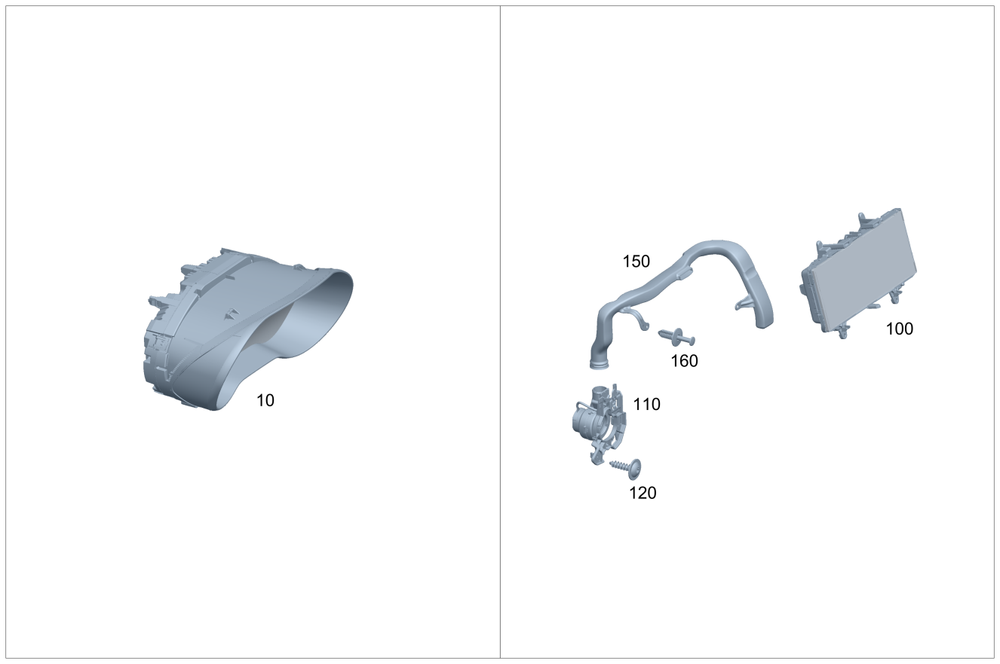

| № | Артикул | Название | Кол. | Примечание | Ограничение |
|---|---|---|---|---|---|
| 10 | A 205 900 24 27 | Блок управления (CONTROL UNIT) | 1 | Комбинация приборов [672] ДЕТАЛЬ ПОСЛЕ УСТАН.ПРОВЕРИТЬ НА АКТУАЛЬНОСТЬ "ПРОШИВНОГО" ПО [697] ДЕТАЛЬ ПОСТАВЛЯЕТСЯ ТОЛЬКО/ИЛИ ТАКЖЕ КАК ЗАП.ЧАСТЬ | (806/807)+494+461+-(P22/P29/233/239/463/464/9O1/M177) |
| 10 | A 205 900 78 29 | Блок управления (CONTROL UNIT) | 1 | Комбинация приборов [672] ДЕТАЛЬ ПОСЛЕ УСТАН.ПРОВЕРИТЬ НА АКТУАЛЬНОСТЬ "ПРОШИВНОГО" ПО [697] ДЕТАЛЬ ПОСТАВЛЯЕТСЯ ТОЛЬКО/ИЛИ ТАКЖЕ КАК ЗАП.ЧАСТЬ | (806/807)+494+461+-(P22/P29/233/239/463/464/9O1/M177) |
| 10 | A 205 900 98 17 | Блок управления (CONTROL UNIT) | 1 | Комбинация приборов [672] ДЕТАЛЬ ПОСЛЕ УСТАН.ПРОВЕРИТЬ НА АКТУАЛЬНОСТЬ "ПРОШИВНОГО" ПО [697] ДЕТАЛЬ ПОСТАВЛЯЕТСЯ ТОЛЬКО/ИЛИ ТАКЖЕ КАК ЗАП.ЧАСТЬ | (806/807)+(M651/M642)+-(P22/P29/233/239/463/464/9O1) |
| 10 | A 205 900 17 27 | Блок управления (CONTROL UNIT) | 1 | Комбинация приборов [672] ДЕТАЛЬ ПОСЛЕ УСТАН.ПРОВЕРИТЬ НА АКТУАЛЬНОСТЬ "ПРОШИВНОГО" ПО [697] ДЕТАЛЬ ПОСТАВЛЯЕТСЯ ТОЛЬКО/ИЛИ ТАКЖЕ КАК ЗАП.ЧАСТЬ | (806/807)+(M651/M642)+-(P22/P29/233/239/463/464/9O1) |
| 10 | A 205 900 71 29 | Блок управления (CONTROL UNIT) | 1 | Комбинация приборов [672] ДЕТАЛЬ ПОСЛЕ УСТАН.ПРОВЕРИТЬ НА АКТУАЛЬНОСТЬ "ПРОШИВНОГО" ПО [697] ДЕТАЛЬ ПОСТАВЛЯЕТСЯ ТОЛЬКО/ИЛИ ТАКЖЕ КАК ЗАП.ЧАСТЬ | (806/807)+(M651/M642)+-(P22/P29/233/239/463/464/9O1) |
| 10 | A 205 900 02 18 | Блок управления (CONTROL UNIT) | 1 | Комбинация приборов [672] ДЕТАЛЬ ПОСЛЕ УСТАН.ПРОВЕРИТЬ НА АКТУАЛЬНОСТЬ "ПРОШИВНОГО" ПО [697] ДЕТАЛЬ ПОСТАВЛЯЕТСЯ ТОЛЬКО/ИЛИ ТАКЖЕ КАК ЗАП.ЧАСТЬ | (806/807)+461+(M651/M642)+-(P22/P29/233/239/463/464/9O1) |
| 10 | A 205 900 21 27 | Блок управления (CONTROL UNIT) | 1 | Комбинация приборов [672] ДЕТАЛЬ ПОСЛЕ УСТАН.ПРОВЕРИТЬ НА АКТУАЛЬНОСТЬ "ПРОШИВНОГО" ПО [697] ДЕТАЛЬ ПОСТАВЛЯЕТСЯ ТОЛЬКО/ИЛИ ТАКЖЕ КАК ЗАП.ЧАСТЬ | (806/807)+461+(M651/M642)+-(P22/P29/233/239/463/464/9O1) |
| 10 | A 205 900 75 29 | Блок управления (CONTROL UNIT) | 1 | Комбинация приборов [672] ДЕТАЛЬ ПОСЛЕ УСТАН.ПРОВЕРИТЬ НА АКТУАЛЬНОСТЬ "ПРОШИВНОГО" ПО [697] ДЕТАЛЬ ПОСТАВЛЯЕТСЯ ТОЛЬКО/ИЛИ ТАКЖЕ КАК ЗАП.ЧАСТЬ | (806/807)+461+(M651/M642)+-(P22/P29/233/239/463/464/9O1) |
| 10 | A 205 900 06 18 | Блок управления (CONTROL UNIT) | 1 | Комбинация приборов [672] ДЕТАЛЬ ПОСЛЕ УСТАН.ПРОВЕРИТЬ НА АКТУАЛЬНОСТЬ "ПРОШИВНОГО" ПО [697] ДЕТАЛЬ ПОСТАВЛЯЕТСЯ ТОЛЬКО/ИЛИ ТАКЖЕ КАК ЗАП.ЧАСТЬ | (806/807)+494+461+(M651/M642)+-(P22/P29/233/239/463/464/9O1) |
| 10 | A 205 900 25 27 | Блок управления (CONTROL UNIT) | 1 | Комбинация приборов [672] ДЕТАЛЬ ПОСЛЕ УСТАН.ПРОВЕРИТЬ НА АКТУАЛЬНОСТЬ "ПРОШИВНОГО" ПО [697] ДЕТАЛЬ ПОСТАВЛЯЕТСЯ ТОЛЬКО/ИЛИ ТАКЖЕ КАК ЗАП.ЧАСТЬ | (806/807)+494+461+(M651/M642)+-(P22/P29/233/239/463/464/9O1) |
| 10 | A 205 900 79 29 | Блок управления (CONTROL UNIT) | 1 | Комбинация приборов [672] ДЕТАЛЬ ПОСЛЕ УСТАН.ПРОВЕРИТЬ НА АКТУАЛЬНОСТЬ "ПРОШИВНОГО" ПО [697] ДЕТАЛЬ ПОСТАВЛЯЕТСЯ ТОЛЬКО/ИЛИ ТАКЖЕ КАК ЗАП.ЧАСТЬ | (806/807)+494+461+(M651/M642)+-(P22/P29/233/239/463/464/9O1) |
| 10 | A 205 900 05 31 | Блок управления (CONTROL UNIT) | 1 | Комбинация приборов [672] ДЕТАЛЬ ПОСЛЕ УСТАН.ПРОВЕРИТЬ НА АКТУАЛЬНОСТЬ "ПРОШИВНОГО" ПО [697] ДЕТАЛЬ ПОСТАВЛЯЕТСЯ ТОЛЬКО/ИЛИ ТАКЖЕ КАК ЗАП.ЧАСТЬ | 808+494+461+-(P22/P29/233/239/463/464/M177) |
| 10 | A 205 900 62 33 | Блок управления (CONTROL UNIT) | 1 | Комбинация приборов [672] ДЕТАЛЬ ПОСЛЕ УСТАН.ПРОВЕРИТЬ НА АКТУАЛЬНОСТЬ "ПРОШИВНОГО" ПО [697] ДЕТАЛЬ ПОСТАВЛЯЕТСЯ ТОЛЬКО/ИЛИ ТАКЖЕ КАК ЗАП.ЧАСТЬ | 808+494+461+-(P22/P29/233/239/463/464/M177) |
| 10 | A 205 900 98 30 | Блок управления (CONTROL UNIT) | 1 | Комбинация приборов [672] ДЕТАЛЬ ПОСЛЕ УСТАН.ПРОВЕРИТЬ НА АКТУАЛЬНОСТЬ "ПРОШИВНОГО" ПО [697] ДЕТАЛЬ ПОСТАВЛЯЕТСЯ ТОЛЬКО/ИЛИ ТАКЖЕ КАК ЗАП.ЧАСТЬ | 808+(M651/M642)+-(P22/P29/233/239/463/464) |
| 10 | A 205 900 55 33 | Блок управления (CONTROL UNIT) | 1 | Комбинация приборов [672] ДЕТАЛЬ ПОСЛЕ УСТАН.ПРОВЕРИТЬ НА АКТУАЛЬНОСТЬ "ПРОШИВНОГО" ПО [697] ДЕТАЛЬ ПОСТАВЛЯЕТСЯ ТОЛЬКО/ИЛИ ТАКЖЕ КАК ЗАП.ЧАСТЬ | 808+(M651/M642)+-(P22/P29/233/239/463/464) |
| 10 | A 205 900 02 31 | Блок управления (CONTROL UNIT) | 1 | Комбинация приборов [672] ДЕТАЛЬ ПОСЛЕ УСТАН.ПРОВЕРИТЬ НА АКТУАЛЬНОСТЬ "ПРОШИВНОГО" ПО [697] ДЕТАЛЬ ПОСТАВЛЯЕТСЯ ТОЛЬКО/ИЛИ ТАКЖЕ КАК ЗАП.ЧАСТЬ | 808+461+(M651/M642)+-(P22/P29/233/239/463/464) |
| 10 | A 205 900 59 33 | Блок управления (CONTROL UNIT) | 1 | Комбинация приборов [672] ДЕТАЛЬ ПОСЛЕ УСТАН.ПРОВЕРИТЬ НА АКТУАЛЬНОСТЬ "ПРОШИВНОГО" ПО [697] ДЕТАЛЬ ПОСТАВЛЯЕТСЯ ТОЛЬКО/ИЛИ ТАКЖЕ КАК ЗАП.ЧАСТЬ | 808+461+(M651/M642)+-(P22/P29/233/239/463/464) |
| 10 | A 205 900 06 31 | Блок управления (CONTROL UNIT) | 1 | Комбинация приборов [672] ДЕТАЛЬ ПОСЛЕ УСТАН.ПРОВЕРИТЬ НА АКТУАЛЬНОСТЬ "ПРОШИВНОГО" ПО [697] ДЕТАЛЬ ПОСТАВЛЯЕТСЯ ТОЛЬКО/ИЛИ ТАКЖЕ КАК ЗАП.ЧАСТЬ | 808+494+461+(M651/M642)+-(P22/P29/233/239/463/464) |
| 10 | A 205 900 63 33 | Блок управления (CONTROL UNIT) | 1 | Комбинация приборов [672] ДЕТАЛЬ ПОСЛЕ УСТАН.ПРОВЕРИТЬ НА АКТУАЛЬНОСТЬ "ПРОШИВНОГО" ПО [697] ДЕТАЛЬ ПОСТАВЛЯЕТСЯ ТОЛЬКО/ИЛИ ТАКЖЕ КАК ЗАП.ЧАСТЬ | 808+494+461+(M651/M642)+-(P22/P29/233/239/463/464) |
| 10 | A 253 900 67 02 | Блок управления (CONTROL UNIT) | 1 | Комбинация приборов [672] ДЕТАЛЬ ПОСЛЕ УСТАН.ПРОВЕРИТЬ НА АКТУАЛЬНОСТЬ "ПРОШИВНОГО" ПО | 809+494+461+-(P22/P29/233/239/463/464/M177) |
| 10 | A 253 900 47 04 | Блок управления (CONTROL UNIT) | 1 | Комбинация приборов [672] ДЕТАЛЬ ПОСЛЕ УСТАН.ПРОВЕРИТЬ НА АКТУАЛЬНОСТЬ "ПРОШИВНОГО" ПО | 809+494+461+-(P22/P29/233/239/463/464/M177) |
| 10 | A 253 900 94 05 | Блок управления (CONTROL UNIT) | 1 | Комбинация приборов [672] ДЕТАЛЬ ПОСЛЕ УСТАН.ПРОВЕРИТЬ НА АКТУАЛЬНОСТЬ "ПРОШИВНОГО" ПО [697] ДЕТАЛЬ ПОСТАВЛЯЕТСЯ ТОЛЬКО/ИЛИ ТАКЖЕ КАК ЗАП.ЧАСТЬ | 809+494+461+-(P22/P29/233/239/463/464/M177) |
| 10 | A 253 900 60 02 | Блок управления (CONTROL UNIT) | 1 | Комбинация приборов [672] ДЕТАЛЬ ПОСЛЕ УСТАН.ПРОВЕРИТЬ НА АКТУАЛЬНОСТЬ "ПРОШИВНОГО" ПО | 809+(M651/M642)+-(P22/P29/233/239/463/464) |
| 10 | A 253 900 40 04 | Блок управления (CONTROL UNIT) | 1 | Комбинация приборов [672] ДЕТАЛЬ ПОСЛЕ УСТАН.ПРОВЕРИТЬ НА АКТУАЛЬНОСТЬ "ПРОШИВНОГО" ПО | 809+(M651/M642)+-(P22/P29/233/239/463/464) |
| 10 | A 253 900 87 05 | Блок управления (CONTROL UNIT) | 1 | Комбинация приборов [672] ДЕТАЛЬ ПОСЛЕ УСТАН.ПРОВЕРИТЬ НА АКТУАЛЬНОСТЬ "ПРОШИВНОГО" ПО [697] ДЕТАЛЬ ПОСТАВЛЯЕТСЯ ТОЛЬКО/ИЛИ ТАКЖЕ КАК ЗАП.ЧАСТЬ | 809+(M651/M642)+-(P22/P29/233/239/463/464) |
| 10 | A 253 900 64 02 | Блок управления (CONTROL UNIT) | 1 | Комбинация приборов [672] ДЕТАЛЬ ПОСЛЕ УСТАН.ПРОВЕРИТЬ НА АКТУАЛЬНОСТЬ "ПРОШИВНОГО" ПО | 809+461+(M651/M642)+-(P22/P29/233/239/463/464) |
| 10 | A 253 900 44 04 | Блок управления (CONTROL UNIT) | 1 | Комбинация приборов [672] ДЕТАЛЬ ПОСЛЕ УСТАН.ПРОВЕРИТЬ НА АКТУАЛЬНОСТЬ "ПРОШИВНОГО" ПО [697] ДЕТАЛЬ ПОСТАВЛЯЕТСЯ ТОЛЬКО/ИЛИ ТАКЖЕ КАК ЗАП.ЧАСТЬ | 809+461+(M651/M642)+-(P22/P29/233/239/463/464) |
| 10 | A 253 900 91 05 | Блок управления (CONTROL UNIT) | 1 | Комбинация приборов [672] ДЕТАЛЬ ПОСЛЕ УСТАН.ПРОВЕРИТЬ НА АКТУАЛЬНОСТЬ "ПРОШИВНОГО" ПО [697] ДЕТАЛЬ ПОСТАВЛЯЕТСЯ ТОЛЬКО/ИЛИ ТАКЖЕ КАК ЗАП.ЧАСТЬ | 809+461+(M651/M642)+-(P22/P29/233/239/463/464) |
| 10 | A 253 900 68 02 | Блок управления (CONTROL UNIT) | 1 | Комбинация приборов [672] ДЕТАЛЬ ПОСЛЕ УСТАН.ПРОВЕРИТЬ НА АКТУАЛЬНОСТЬ "ПРОШИВНОГО" ПО | 809+494+461+(M651/M642)+-(P22/P29/233/239/463/464) |
| 10 | A 253 900 48 04 | Блок управления (CONTROL UNIT) | 1 | Комбинация приборов [672] ДЕТАЛЬ ПОСЛЕ УСТАН.ПРОВЕРИТЬ НА АКТУАЛЬНОСТЬ "ПРОШИВНОГО" ПО | 809+494+461+(M651/M642)+-(P22/P29/233/239/463/464) |
| 10 | A 253 900 95 05 | Блок управления (CONTROL UNIT) | 1 | Комбинация приборов [672] ДЕТАЛЬ ПОСЛЕ УСТАН.ПРОВЕРИТЬ НА АКТУАЛЬНОСТЬ "ПРОШИВНОГО" ПО [697] ДЕТАЛЬ ПОСТАВЛЯЕТСЯ ТОЛЬКО/ИЛИ ТАКЖЕ КАК ЗАП.ЧАСТЬ | 809+494+461+(M651/M642)+-(P22/P29/233/239/463/464) |
| 10 | A 205 900 93 44 | Блок управления (CONTROL UNIT) | 1 | Комбинация приборов [672] ДЕТАЛЬ ПОСЛЕ УСТАН.ПРОВЕРИТЬ НА АКТУАЛЬНОСТЬ "ПРОШИВНОГО" ПО [697] ДЕТАЛЬ ПОСТАВЛЯЕТСЯ ТОЛЬКО/ИЛИ ТАКЖЕ КАК ЗАП.ЧАСТЬ | 800+-(P22/P29/233/239/463/464/M177/050/9O1/M654/M656/ME05/B01) |
| 10 | A 205 900 94 46 | Блок управления (CONTROL UNIT) | 1 | Комбинация приборов [672] ДЕТАЛЬ ПОСЛЕ УСТАН.ПРОВЕРИТЬ НА АКТУАЛЬНОСТЬ "ПРОШИВНОГО" ПО [697] ДЕТАЛЬ ПОСТАВЛЯЕТСЯ ТОЛЬКО/ИЛИ ТАКЖЕ КАК ЗАП.ЧАСТЬ | 800+050+-(P22/P29/233/239/463/464/M177/9O1/M654/M656/ME05/B01) |
| 10 | A 205 900 53 48 | Блок управления (CONTROL UNIT) | 1 | Комбинация приборов [672] ДЕТАЛЬ ПОСЛЕ УСТАН.ПРОВЕРИТЬ НА АКТУАЛЬНОСТЬ "ПРОШИВНОГО" ПО | 801+-(P22/P29/233/239/463/464/M177/9O1/M654/M656/ME05/B01) |
| 10 | A 205 900 53 48 | Блок управления (CONTROL UNIT) | 1 | Комбинация приборов [672] ДЕТАЛЬ ПОСЛЕ УСТАН.ПРОВЕРИТЬ НА АКТУАЛЬНОСТЬ "ПРОШИВНОГО" ПО | -(P22/P29/233/239/463/464/M177/9O1/M654/M656/ME05/B01) |
| 10 | A 205 900 03 45 | Блок управления (CONTROL UNIT) | 1 | Комбинация приборов [672] ДЕТАЛЬ ПОСЛЕ УСТАН.ПРОВЕРИТЬ НА АКТУАЛЬНОСТЬ "ПРОШИВНОГО" ПО [697] ДЕТАЛЬ ПОСТАВЛЯЕТСЯ ТОЛЬКО/ИЛИ ТАКЖЕ КАК ЗАП.ЧАСТЬ | 800+(460/830)+-(P22/P29/233/239/463/464/M177/050/9O1/M654/M656/ME05/B01) |
| 10 | A 205 900 04 47 | Блок управления (CONTROL UNIT) | 1 | Комбинация приборов [672] ДЕТАЛЬ ПОСЛЕ УСТАН.ПРОВЕРИТЬ НА АКТУАЛЬНОСТЬ "ПРОШИВНОГО" ПО [697] ДЕТАЛЬ ПОСТАВЛЯЕТСЯ ТОЛЬКО/ИЛИ ТАКЖЕ КАК ЗАП.ЧАСТЬ | (460/830)+800+050+-(P22/P29/233/239/463/464/M177/9O1/M654/M656/ME05/B01) |
| 10 | A 205 900 64 48 | Блок управления (CONTROL UNIT) | 1 | Комбинация приборов [672] ДЕТАЛЬ ПОСЛЕ УСТАН.ПРОВЕРИТЬ НА АКТУАЛЬНОСТЬ "ПРОШИВНОГО" ПО | (460/830)+801+-(P22/P29/233/239/463/464/M177/9O1/M654/M656/ME05/B01) |
| 10 | A 205 900 64 48 | Блок управления (CONTROL UNIT) | 1 | Комбинация приборов [672] ДЕТАЛЬ ПОСЛЕ УСТАН.ПРОВЕРИТЬ НА АКТУАЛЬНОСТЬ "ПРОШИВНОГО" ПО | (460/830)+-(P22/P29/233/239/463/464/M177/9O1/M654/M656/ME05/B01) |
| 10 | A 205 900 97 44 | Блок управления (CONTROL UNIT) | 1 | Комбинация приборов [672] ДЕТАЛЬ ПОСЛЕ УСТАН.ПРОВЕРИТЬ НА АКТУАЛЬНОСТЬ "ПРОШИВНОГО" ПО [697] ДЕТАЛЬ ПОСТАВЛЯЕТСЯ ТОЛЬКО/ИЛИ ТАКЖЕ КАК ЗАП.ЧАСТЬ | 800+461+-(P22/P29/233/239/463/464/M177/050/9O1/M654/M656/ME05/B01) |
| 10 | A 205 900 98 46 | Блок управления | 1 | Комбинация приборов [672] ДЕТАЛЬ ПОСЛЕ УСТАН.ПРОВЕРИТЬ НА АКТУАЛЬНОСТЬ "ПРОШИВНОГО" ПО [697] ДЕТАЛЬ ПОСТАВЛЯЕТСЯ ТОЛЬКО/ИЛИ ТАКЖЕ КАК ЗАП.ЧАСТЬ | 461+800+050+-(P22/P29/233/239/463/464/M177/9O1/M654/M656/ME05/B01) |
| 10 | A 205 900 58 48 | Блок управления | 1 | Комбинация приборов [672] ДЕТАЛЬ ПОСЛЕ УСТАН.ПРОВЕРИТЬ НА АКТУАЛЬНОСТЬ "ПРОШИВНОГО" ПО | 461+801+-(P22/P29/233/239/463/464/M177/9O1/M654/M656/ME05/B01) |
| 10 | A 205 900 58 48 | Блок управления | 1 | Комбинация приборов [672] ДЕТАЛЬ ПОСЛЕ УСТАН.ПРОВЕРИТЬ НА АКТУАЛЬНОСТЬ "ПРОШИВНОГО" ПО | 461+-(P22/P29/233/239/463/464/M177/9O1/M654/M656/ME05/B01) |
| 10 | A 205 900 01 45 | Блок управления (CONTROL UNIT) | 1 | Комбинация приборов [672] ДЕТАЛЬ ПОСЛЕ УСТАН.ПРОВЕРИТЬ НА АКТУАЛЬНОСТЬ "ПРОШИВНОГО" ПО [697] ДЕТАЛЬ ПОСТАВЛЯЕТСЯ ТОЛЬКО/ИЛИ ТАКЖЕ КАК ЗАП.ЧАСТЬ | 800+494+461+-(P22/P29/233/239/463/464/M177/050/9O1/M654/M656/ME05/B01) |
| 10 | A 205 900 02 47 | Блок управления | 1 | Комбинация приборов [672] ДЕТАЛЬ ПОСЛЕ УСТАН.ПРОВЕРИТЬ НА АКТУАЛЬНОСТЬ "ПРОШИВНОГО" ПО | 800+050+494+461+-(P22/P29/233/239/463/464/M177/9O1/M654/M656/ME05/B01) |
| 10 | A 205 900 62 48 | Блок управления | 1 | Комбинация приборов [672] ДЕТАЛЬ ПОСЛЕ УСТАН.ПРОВЕРИТЬ НА АКТУАЛЬНОСТЬ "ПРОШИВНОГО" ПО | 461+494+801+-(P22/P29/233/239/463/464/M177/9O1/M654/M656/ME05/B01) |
| 10 | A 205 900 62 48 | Блок управления | 1 | Комбинация приборов [672] ДЕТАЛЬ ПОСЛЕ УСТАН.ПРОВЕРИТЬ НА АКТУАЛЬНОСТЬ "ПРОШИВНОГО" ПО | 461+494+801+-(P22/P29/233/239/463/464/M177/9O1/M654/M656/ME05/B01) |
| 10 | A 205 900 95 44 | Блок управления (CONTROL UNIT) | 1 | Комбинация приборов [672] ДЕТАЛЬ ПОСЛЕ УСТАН.ПРОВЕРИТЬ НА АКТУАЛЬНОСТЬ "ПРОШИВНОГО" ПО [697] ДЕТАЛЬ ПОСТАВЛЯЕТСЯ ТОЛЬКО/ИЛИ ТАКЖЕ КАК ЗАП.ЧАСТЬ | 800+(ME05/B01)+-(P22/P29/233/239/463/464/050/9O1/M177/M654/M656) |
| 10 | A 205 900 96 46 | Блок управления (CONTROL UNIT) | 1 | Комбинация приборов [672] ДЕТАЛЬ ПОСЛЕ УСТАН.ПРОВЕРИТЬ НА АКТУАЛЬНОСТЬ "ПРОШИВНОГО" ПО [697] ДЕТАЛЬ ПОСТАВЛЯЕТСЯ ТОЛЬКО/ИЛИ ТАКЖЕ КАК ЗАП.ЧАСТЬ | 800+050+(ME05/B01)+-(P22/P29/233/239/463/464/9O1/M177/M654/M656) |
| 10 | A 205 900 56 48 | Блок управления (CONTROL UNIT) | 1 | Комбинация приборов [672] ДЕТАЛЬ ПОСЛЕ УСТАН.ПРОВЕРИТЬ НА АКТУАЛЬНОСТЬ "ПРОШИВНОГО" ПО | (ME05/B01)+801+-(P22/P29/233/239/463/464/9O1/M177/M654/M656) |
| 10 | A 205 900 56 48 | Блок управления (CONTROL UNIT) | 1 | Комбинация приборов [672] ДЕТАЛЬ ПОСЛЕ УСТАН.ПРОВЕРИТЬ НА АКТУАЛЬНОСТЬ "ПРОШИВНОГО" ПО | (ME05/B01)+-(P22/P29/233/239/463/464/9O1/M177/M654/M656) |
| 10 | A 205 900 05 45 | Блок управления (CONTROL UNIT) | 1 | Комбинация приборов [672] ДЕТАЛЬ ПОСЛЕ УСТАН.ПРОВЕРИТЬ НА АКТУАЛЬНОСТЬ "ПРОШИВНОГО" ПО [697] ДЕТАЛЬ ПОСТАВЛЯЕТСЯ ТОЛЬКО/ИЛИ ТАКЖЕ КАК ЗАП.ЧАСТЬ | 800+(ME05/B01)+(830/460)+-(P22/P29/233/239/463/464/050/9O1/M177/M654/M656) |
| 10 | A 205 900 06 47 | Блок управления (CONTROL UNIT) | 1 | Комбинация приборов [672] ДЕТАЛЬ ПОСЛЕ УСТАН.ПРОВЕРИТЬ НА АКТУАЛЬНОСТЬ "ПРОШИВНОГО" ПО [697] ДЕТАЛЬ ПОСТАВЛЯЕТСЯ ТОЛЬКО/ИЛИ ТАКЖЕ КАК ЗАП.ЧАСТЬ | 800+050+(ME05/B01)+(460/830)+-(P22/P29/233/239/463/464/9O1/M177/M654/M656) |
| 10 | A 205 900 66 48 | Блок управления (CONTROL UNIT) | 1 | Комбинация приборов [672] ДЕТАЛЬ ПОСЛЕ УСТАН.ПРОВЕРИТЬ НА АКТУАЛЬНОСТЬ "ПРОШИВНОГО" ПО | (ME05/B01)+(460/830)+801+-(P22/P29/233/239/463/464/9O1/M177/M654/M656) |
| 10 | A 205 900 66 48 | Блок управления (CONTROL UNIT) | 1 | Комбинация приборов [672] ДЕТАЛЬ ПОСЛЕ УСТАН.ПРОВЕРИТЬ НА АКТУАЛЬНОСТЬ "ПРОШИВНОГО" ПО | (ME05/B01)+(460/830)+-(P22/P29/233/239/463/464/9O1/M177/M654/M656) |
| 10 | A 205 900 99 44 | Блок управления (CONTROL UNIT) | 1 | Комбинация приборов [672] ДЕТАЛЬ ПОСЛЕ УСТАН.ПРОВЕРИТЬ НА АКТУАЛЬНОСТЬ "ПРОШИВНОГО" ПО | 800+461+(ME05/B01)+-(P22/P29/233/239/463/464/050/9O1/M177/M654/M656) |
| 10 | A 205 900 00 47 | Блок управления | 1 | Комбинация приборов [672] ДЕТАЛЬ ПОСЛЕ УСТАН.ПРОВЕРИТЬ НА АКТУАЛЬНОСТЬ "ПРОШИВНОГО" ПО | 800+050+(ME05/B01)+461+-(P22/P29/233/239/463/464/9O1/M177/M654/M656) |
| 10 | A 205 900 60 48 | Блок управления | 1 | Комбинация приборов [672] ДЕТАЛЬ ПОСЛЕ УСТАН.ПРОВЕРИТЬ НА АКТУАЛЬНОСТЬ "ПРОШИВНОГО" ПО | (ME05/B01)+461+801+-(P22/P29/233/239/463/464/9O1/M177/M654/M656) |
| 10 | A 205 900 60 48 | Блок управления | 1 | Комбинация приборов [672] ДЕТАЛЬ ПОСЛЕ УСТАН.ПРОВЕРИТЬ НА АКТУАЛЬНОСТЬ "ПРОШИВНОГО" ПО | (ME05/B01)+461+-(P22/P29/233/239/463/464/9O1/M177/M654/M656) |
| 10 | A 205 900 02 45 | Блок управления (CONTROL UNIT) | 1 | Комбинация приборов [672] ДЕТАЛЬ ПОСЛЕ УСТАН.ПРОВЕРИТЬ НА АКТУАЛЬНОСТЬ "ПРОШИВНОГО" ПО [697] ДЕТАЛЬ ПОСТАВЛЯЕТСЯ ТОЛЬКО/ИЛИ ТАКЖЕ КАК ЗАП.ЧАСТЬ | 800+494+461+(ME05/B01)+-(P22/P29/233/239/463/464/050/9O1/M177/M654/M656) |
| 10 | A 205 900 03 47 | Блок управления | 1 | Комбинация приборов [672] ДЕТАЛЬ ПОСЛЕ УСТАН.ПРОВЕРИТЬ НА АКТУАЛЬНОСТЬ "ПРОШИВНОГО" ПО | 800+050+(ME05/B01)+461+494+-(P22/P29/233/239/463/464/9O1/M177/M654/M656) |
| 10 | A 205 900 63 48 | Блок управления | 1 | Комбинация приборов [672] ДЕТАЛЬ ПОСЛЕ УСТАН.ПРОВЕРИТЬ НА АКТУАЛЬНОСТЬ "ПРОШИВНОГО" ПО | (ME05/B01)+461+494+801+-(P22/P29/233/239/463/464/9O1/M177/M654/M656) |
| 10 | A 205 900 63 48 | Блок управления | 1 | Комбинация приборов [672] ДЕТАЛЬ ПОСЛЕ УСТАН.ПРОВЕРИТЬ НА АКТУАЛЬНОСТЬ "ПРОШИВНОГО" ПО | (ME05/B01)+461+494+801+-(P22/P29/233/239/463/464/9O1/M177/M654/M656) |
| 10 | A 205 900 03 45 | Блок управления (CONTROL UNIT) | 1 | Комбинация приборов [672] ДЕТАЛЬ ПОСЛЕ УСТАН.ПРОВЕРИТЬ НА АКТУАЛЬНОСТЬ "ПРОШИВНОГО" ПО [697] ДЕТАЛЬ ПОСТАВЛЯЕТСЯ ТОЛЬКО/ИЛИ ТАКЖЕ КАК ЗАП.ЧАСТЬ | (P29+-M276/P22)+800+-(050/233/239/463/464/M177/9O1/M654/M656/ME05/B01) |
| 10 | A 205 900 04 47 | Блок управления (CONTROL UNIT) | 1 | Комбинация приборов [672] ДЕТАЛЬ ПОСЛЕ УСТАН.ПРОВЕРИТЬ НА АКТУАЛЬНОСТЬ "ПРОШИВНОГО" ПО [697] ДЕТАЛЬ ПОСТАВЛЯЕТСЯ ТОЛЬКО/ИЛИ ТАКЖЕ КАК ЗАП.ЧАСТЬ | (P29+-M276/P22)+800+050+-(233/239/463/464/M177/9O1/M654/M656/ME05/B01) |
| 10 | A 205 900 64 48 | Блок управления (CONTROL UNIT) | 1 | Комбинация приборов [672] ДЕТАЛЬ ПОСЛЕ УСТАН.ПРОВЕРИТЬ НА АКТУАЛЬНОСТЬ "ПРОШИВНОГО" ПО | (P29+-M276/P22)+801+-(233/239/463/464/M177/M654/M656/ME05/B01) |
| 10 | A 205 900 64 48 | Блок управления (CONTROL UNIT) | 1 | Комбинация приборов [672] ДЕТАЛЬ ПОСЛЕ УСТАН.ПРОВЕРИТЬ НА АКТУАЛЬНОСТЬ "ПРОШИВНОГО" ПО | (P29+-M276/P22)+-(233/239/463/464/M177/M654/M656/ME05/B01) |
| 10 | A 205 900 07 45 | Блок управления (CONTROL UNIT) | 1 | Комбинация приборов [672] ДЕТАЛЬ ПОСЛЕ УСТАН.ПРОВЕРИТЬ НА АКТУАЛЬНОСТЬ "ПРОШИВНОГО" ПО | (P29+-M276/P22)+461+800+-(050/233/239/463/464/M177/9O1/M654/M656/ME05/B01) |
| 10 | A 205 900 08 47 | Блок управления (CONTROL UNIT) | 1 | Комбинация приборов [672] ДЕТАЛЬ ПОСЛЕ УСТАН.ПРОВЕРИТЬ НА АКТУАЛЬНОСТЬ "ПРОШИВНОГО" ПО | (P29+-M276/P22)+461+800+050+-(233/239/463/464/M177/9O1/M654/M656/ME05/B01) |
| 10 | A 205 900 68 48 | Блок управления | 1 | Комбинация приборов [672] ДЕТАЛЬ ПОСЛЕ УСТАН.ПРОВЕРИТЬ НА АКТУАЛЬНОСТЬ "ПРОШИВНОГО" ПО | (P29+-M276/P22)+461+801+-(233/239/463/464/M177/M654/M656/ME05/B01) |
| 10 | A 205 900 68 48 | Блок управления | 1 | Комбинация приборов [672] ДЕТАЛЬ ПОСЛЕ УСТАН.ПРОВЕРИТЬ НА АКТУАЛЬНОСТЬ "ПРОШИВНОГО" ПО | (P29+-M276/P22)+461+-(233/239/463/464/M177/M654/M656/ME05/B01) |
| 10 | A 205 900 11 45 | Блок управления (CONTROL UNIT) | 1 | Комбинация приборов [672] ДЕТАЛЬ ПОСЛЕ УСТАН.ПРОВЕРИТЬ НА АКТУАЛЬНОСТЬ "ПРОШИВНОГО" ПО [697] ДЕТАЛЬ ПОСТАВЛЯЕТСЯ ТОЛЬКО/ИЛИ ТАКЖЕ КАК ЗАП.ЧАСТЬ | (P29+-M276/P22)+461+494+800+-(050/233/239/463/464/M177/9O1/M654/M656/ME05/B01) |
| 10 | A 205 900 12 47 | Блок управления (CONTROL UNIT) | 1 | Комбинация приборов [672] ДЕТАЛЬ ПОСЛЕ УСТАН.ПРОВЕРИТЬ НА АКТУАЛЬНОСТЬ "ПРОШИВНОГО" ПО [697] ДЕТАЛЬ ПОСТАВЛЯЕТСЯ ТОЛЬКО/ИЛИ ТАКЖЕ КАК ЗАП.ЧАСТЬ | (P29+-M276/P22)+461+494+800+050+-(233/239/463/464/M177/M654/M656/ME05/B01) |
| 10 | A 205 900 72 48 | Блок управления (CONTROL UNIT) | 1 | Комбинация приборов [672] ДЕТАЛЬ ПОСЛЕ УСТАН.ПРОВЕРИТЬ НА АКТУАЛЬНОСТЬ "ПРОШИВНОГО" ПО | (P29+-M276/P22)+461+494+801+-(233/239/463/464/M177/M654/M656/ME05/B01) |
| 10 | A 205 900 72 48 | Блок управления (CONTROL UNIT) | 1 | Комбинация приборов [672] ДЕТАЛЬ ПОСЛЕ УСТАН.ПРОВЕРИТЬ НА АКТУАЛЬНОСТЬ "ПРОШИВНОГО" ПО | (P29+-M276/P22)+461+494+-(233/239/463/464/M177/M654/M656/ME05/B01) |
| 10 | A 205 900 05 45 | Блок управления (CONTROL UNIT) | 1 | Комбинация приборов [672] ДЕТАЛЬ ПОСЛЕ УСТАН.ПРОВЕРИТЬ НА АКТУАЛЬНОСТЬ "ПРОШИВНОГО" ПО [697] ДЕТАЛЬ ПОСТАВЛЯЕТСЯ ТОЛЬКО/ИЛИ ТАКЖЕ КАК ЗАП.ЧАСТЬ | (ME05+-M654/B01)+(P29/P22)+800+-(050/233/239/463/464) |
| 10 | A 205 900 06 47 | Блок управления (CONTROL UNIT) | 1 | Комбинация приборов [672] ДЕТАЛЬ ПОСЛЕ УСТАН.ПРОВЕРИТЬ НА АКТУАЛЬНОСТЬ "ПРОШИВНОГО" ПО [697] ДЕТАЛЬ ПОСТАВЛЯЕТСЯ ТОЛЬКО/ИЛИ ТАКЖЕ КАК ЗАП.ЧАСТЬ | (ME05+-M654/B01)+(P29/P22)+800+050+-(233/239/463/464) |
| 10 | A 205 900 66 48 | Блок управления (CONTROL UNIT) | 1 | Комбинация приборов [672] ДЕТАЛЬ ПОСЛЕ УСТАН.ПРОВЕРИТЬ НА АКТУАЛЬНОСТЬ "ПРОШИВНОГО" ПО | (ME05+-M654/B01)+(P29/P22)+801+-(233/239/463/464) |
| 10 | A 205 900 66 48 | Блок управления (CONTROL UNIT) | 1 | Комбинация приборов [672] ДЕТАЛЬ ПОСЛЕ УСТАН.ПРОВЕРИТЬ НА АКТУАЛЬНОСТЬ "ПРОШИВНОГО" ПО | (ME05+-M654/B01)+(P29/P22)+-(233/239/463/464) |
| 10 | A 205 900 09 45 | Блок управления (CONTROL UNIT) | 1 | Комбинация приборов [672] ДЕТАЛЬ ПОСЛЕ УСТАН.ПРОВЕРИТЬ НА АКТУАЛЬНОСТЬ "ПРОШИВНОГО" ПО [697] ДЕТАЛЬ ПОСТАВЛЯЕТСЯ ТОЛЬКО/ИЛИ ТАКЖЕ КАК ЗАП.ЧАСТЬ | (ME05+-M654/B01)+(P29/P22)+461+800+-(050/233/239/463/464) |
| 10 | A 205 900 10 47 | Блок управления (CONTROL UNIT) | 1 | Комбинация приборов [672] ДЕТАЛЬ ПОСЛЕ УСТАН.ПРОВЕРИТЬ НА АКТУАЛЬНОСТЬ "ПРОШИВНОГО" ПО | (ME05+-M654/B01)+(P29/P22)+461+800+050+-(233/239/463/464) |
| 10 | A 205 900 70 48 | Блок управления | 1 | Комбинация приборов [672] ДЕТАЛЬ ПОСЛЕ УСТАН.ПРОВЕРИТЬ НА АКТУАЛЬНОСТЬ "ПРОШИВНОГО" ПО | (ME05+-M654/B01)+(P29/P22)+461+801+-(233/239/463/464) |
| 10 | A 205 900 70 48 | Блок управления | 1 | Комбинация приборов [672] ДЕТАЛЬ ПОСЛЕ УСТАН.ПРОВЕРИТЬ НА АКТУАЛЬНОСТЬ "ПРОШИВНОГО" ПО | (ME05+-M654/B01)+(P29/P22)+461+-(233/239/463/464) |
| 10 | A 205 900 12 45 | Блок управления (CONTROL UNIT) | 1 | Комбинация приборов [672] ДЕТАЛЬ ПОСЛЕ УСТАН.ПРОВЕРИТЬ НА АКТУАЛЬНОСТЬ "ПРОШИВНОГО" ПО [697] ДЕТАЛЬ ПОСТАВЛЯЕТСЯ ТОЛЬКО/ИЛИ ТАКЖЕ КАК ЗАП.ЧАСТЬ | (ME05+-M654/B01)+(P29/P22)+461+494+800+-(050/233/239/463/464) |
| 10 | A 205 900 13 47 | Блок управления | 1 | Комбинация приборов [672] ДЕТАЛЬ ПОСЛЕ УСТАН.ПРОВЕРИТЬ НА АКТУАЛЬНОСТЬ "ПРОШИВНОГО" ПО | (ME05+-M654/B01)+(P29/P22)+461+494+800+050+-(233/239/463/464) |
| 10 | A 205 900 73 48 | Блок управления | 1 | Комбинация приборов [672] ДЕТАЛЬ ПОСЛЕ УСТАН.ПРОВЕРИТЬ НА АКТУАЛЬНОСТЬ "ПРОШИВНОГО" ПО | (ME05+-M654/B01)+(P29/P22)+461+494+801+-(233/239/463/464) |
| 10 | A 205 900 73 48 | Блок управления | 1 | Комбинация приборов [672] ДЕТАЛЬ ПОСЛЕ УСТАН.ПРОВЕРИТЬ НА АКТУАЛЬНОСТЬ "ПРОШИВНОГО" ПО | (ME05+-M654/B01)+(P29/P22)+461+494+-(233/239/463/464) |
| 10 | A 205 900 13 45 | Блок управления (CONTROL UNIT) | 1 | Комбинация приборов [672] ДЕТАЛЬ ПОСЛЕ УСТАН.ПРОВЕРИТЬ НА АКТУАЛЬНОСТЬ "ПРОШИВНОГО" ПО [697] ДЕТАЛЬ ПОСТАВЛЯЕТСЯ ТОЛЬКО/ИЛИ ТАКЖЕ КАК ЗАП.ЧАСТЬ | (233/239)+800+-(050/463/464/9O1/M654/M656/ME05/B01) |
| 10 | A 205 900 14 47 | Блок управления (CONTROL UNIT) | 1 | Комбинация приборов [672] ДЕТАЛЬ ПОСЛЕ УСТАН.ПРОВЕРИТЬ НА АКТУАЛЬНОСТЬ "ПРОШИВНОГО" ПО [697] ДЕТАЛЬ ПОСТАВЛЯЕТСЯ ТОЛЬКО/ИЛИ ТАКЖЕ КАК ЗАП.ЧАСТЬ | (233/239)+800+050+-(463/464/9O1/M654/M656/ME05/B01) |
| 10 | A 205 900 74 48 | Блок управления (CONTROL UNIT) | 1 | Комбинация приборов [672] ДЕТАЛЬ ПОСЛЕ УСТАН.ПРОВЕРИТЬ НА АКТУАЛЬНОСТЬ "ПРОШИВНОГО" ПО | (233/239)+801+-(463/464/9O1/M654/M656/ME05/B01) |
| 10 | A 205 900 74 48 | Блок управления (CONTROL UNIT) | 1 | Комбинация приборов [672] ДЕТАЛЬ ПОСЛЕ УСТАН.ПРОВЕРИТЬ НА АКТУАЛЬНОСТЬ "ПРОШИВНОГО" ПО | (233/239)+-(463/464/9O1/M654/M656/ME05/B01) |
| 10 | A 205 900 17 45 | Блок управления (CONTROL UNIT) | 1 | Комбинация приборов [672] ДЕТАЛЬ ПОСЛЕ УСТАН.ПРОВЕРИТЬ НА АКТУАЛЬНОСТЬ "ПРОШИВНОГО" ПО | (233/239)+461+800+-(050/463/464/9O1/M654/M656/ME05/B01) |
| 10 | A 205 900 18 47 | Блок управления | 1 | Комбинация приборов [672] ДЕТАЛЬ ПОСЛЕ УСТАН.ПРОВЕРИТЬ НА АКТУАЛЬНОСТЬ "ПРОШИВНОГО" ПО | (233/239)+461+800+050+-(463/464/9O1/M654/M656/ME05/B01) |
| 10 | A 205 900 78 48 | Блок управления | 1 | Комбинация приборов [672] ДЕТАЛЬ ПОСЛЕ УСТАН.ПРОВЕРИТЬ НА АКТУАЛЬНОСТЬ "ПРОШИВНОГО" ПО | (233/239)+461+801+-(463/464/9O1/M654/M656/ME05/B01) |
| 10 | A 205 900 78 48 | Блок управления | 1 | Комбинация приборов [672] ДЕТАЛЬ ПОСЛЕ УСТАН.ПРОВЕРИТЬ НА АКТУАЛЬНОСТЬ "ПРОШИВНОГО" ПО | (233/239)+461+801+-(463/464/9O1/M654/M656/ME05/B01) |
| 10 | A 205 900 21 45 | Блок управления (CONTROL UNIT) | 1 | Комбинация приборов [672] ДЕТАЛЬ ПОСЛЕ УСТАН.ПРОВЕРИТЬ НА АКТУАЛЬНОСТЬ "ПРОШИВНОГО" ПО [697] ДЕТАЛЬ ПОСТАВЛЯЕТСЯ ТОЛЬКО/ИЛИ ТАКЖЕ КАК ЗАП.ЧАСТЬ | (233/239)+461+494+800+-(050/463/464/9O1/M654/M656/ME05/B01) |
| 10 | A 205 900 22 47 | Блок управления (CONTROL UNIT) | 1 | Комбинация приборов [672] ДЕТАЛЬ ПОСЛЕ УСТАН.ПРОВЕРИТЬ НА АКТУАЛЬНОСТЬ "ПРОШИВНОГО" ПО | (233/239)+461+494+800+050+-(463/464/9O1/M654/M656/ME05/B01) |
| 10 | A 205 900 82 48 | Блок управления (CONTROL UNIT) | 1 | Комбинация приборов [672] ДЕТАЛЬ ПОСЛЕ УСТАН.ПРОВЕРИТЬ НА АКТУАЛЬНОСТЬ "ПРОШИВНОГО" ПО | (233/239)+461+494+801+-(463/464/9O1/M654/M656/ME05/B01) |
| 10 | A 205 900 82 48 | Блок управления (CONTROL UNIT) | 1 | Комбинация приборов [672] ДЕТАЛЬ ПОСЛЕ УСТАН.ПРОВЕРИТЬ НА АКТУАЛЬНОСТЬ "ПРОШИВНОГО" ПО | (233/239)+461+494+801+-(463/464/9O1/M654/M656/ME05/B01) |
| 10 | A 205 900 15 45 | Блок управления (CONTROL UNIT) | 1 | Комбинация приборов [672] ДЕТАЛЬ ПОСЛЕ УСТАН.ПРОВЕРИТЬ НА АКТУАЛЬНОСТЬ "ПРОШИВНОГО" ПО [697] ДЕТАЛЬ ПОСТАВЛЯЕТСЯ ТОЛЬКО/ИЛИ ТАКЖЕ КАК ЗАП.ЧАСТЬ | (ME05+-M654/B01)+(233/239)+800+-(050/463/464) |
| 10 | A 205 900 16 47 | Блок управления (CONTROL UNIT) | 1 | Комбинация приборов [672] ДЕТАЛЬ ПОСЛЕ УСТАН.ПРОВЕРИТЬ НА АКТУАЛЬНОСТЬ "ПРОШИВНОГО" ПО [697] ДЕТАЛЬ ПОСТАВЛЯЕТСЯ ТОЛЬКО/ИЛИ ТАКЖЕ КАК ЗАП.ЧАСТЬ | (ME05+-M654/B01)+(233/239)+800+050+-(463/464) |
| 10 | A 205 900 76 48 | Блок управления (CONTROL UNIT) | 1 | Комбинация приборов [672] ДЕТАЛЬ ПОСЛЕ УСТАН.ПРОВЕРИТЬ НА АКТУАЛЬНОСТЬ "ПРОШИВНОГО" ПО [697] ДЕТАЛЬ ПОСТАВЛЯЕТСЯ ТОЛЬКО/ИЛИ ТАКЖЕ КАК ЗАП.ЧАСТЬ | (ME05/B01)+(233/239)+801+-(463/464) |
| 10 | A 205 900 76 48 | Блок управления (CONTROL UNIT) | 1 | Комбинация приборов [672] ДЕТАЛЬ ПОСЛЕ УСТАН.ПРОВЕРИТЬ НА АКТУАЛЬНОСТЬ "ПРОШИВНОГО" ПО [697] ДЕТАЛЬ ПОСТАВЛЯЕТСЯ ТОЛЬКО/ИЛИ ТАКЖЕ КАК ЗАП.ЧАСТЬ | (ME05/B01)+(233/239)+-(463/464) |
| 10 | A 205 900 19 45 | Блок управления (CONTROL UNIT) | 1 | Комбинация приборов [672] ДЕТАЛЬ ПОСЛЕ УСТАН.ПРОВЕРИТЬ НА АКТУАЛЬНОСТЬ "ПРОШИВНОГО" ПО | (ME05+-M654/B01)+(233/239)+461+800+-(050/463/464) |
| 10 | A 205 900 20 47 | Блок управления | 1 | Комбинация приборов [672] ДЕТАЛЬ ПОСЛЕ УСТАН.ПРОВЕРИТЬ НА АКТУАЛЬНОСТЬ "ПРОШИВНОГО" ПО | (ME05+-M654/B01)+(233/239)+461+800+050+-(463/464) |
| 10 | A 205 900 80 48 | Блок управления | 1 | Комбинация приборов [672] ДЕТАЛЬ ПОСЛЕ УСТАН.ПРОВЕРИТЬ НА АКТУАЛЬНОСТЬ "ПРОШИВНОГО" ПО | (ME05/B01)+(233/239)+461+801+-(463/464) |
| 10 | A 205 900 80 48 | Блок управления | 1 | Комбинация приборов [672] ДЕТАЛЬ ПОСЛЕ УСТАН.ПРОВЕРИТЬ НА АКТУАЛЬНОСТЬ "ПРОШИВНОГО" ПО | (ME05/B01)+(233/239)+461+-(463/464) |
| 10 | A 205 900 22 45 | Блок управления (CONTROL UNIT) | 1 | Комбинация приборов [672] ДЕТАЛЬ ПОСЛЕ УСТАН.ПРОВЕРИТЬ НА АКТУАЛЬНОСТЬ "ПРОШИВНОГО" ПО [697] ДЕТАЛЬ ПОСТАВЛЯЕТСЯ ТОЛЬКО/ИЛИ ТАКЖЕ КАК ЗАП.ЧАСТЬ | (ME05+-M654/B01)+(233/239)+461+494+800+-(050/463/464) |
| 10 | A 205 900 23 47 | Блок управления (CONTROL UNIT) | 1 | Комбинация приборов [672] ДЕТАЛЬ ПОСЛЕ УСТАН.ПРОВЕРИТЬ НА АКТУАЛЬНОСТЬ "ПРОШИВНОГО" ПО | (ME05+-M654/B01)+(233/239)+461+494+800+050+-(463/464) |
| 10 | A 205 900 83 48 | Блок управления | 1 | Комбинация приборов [672] ДЕТАЛЬ ПОСЛЕ УСТАН.ПРОВЕРИТЬ НА АКТУАЛЬНОСТЬ "ПРОШИВНОГО" ПО | (ME05/B01)+(233/239)+461+494+801+-(463/464) |
| 10 | A 205 900 83 48 | Блок управления | 1 | Комбинация приборов [672] ДЕТАЛЬ ПОСЛЕ УСТАН.ПРОВЕРИТЬ НА АКТУАЛЬНОСТЬ "ПРОШИВНОГО" ПО | (ME05/B01)+(233/239)+461+494+-(463/464) |
| 10 | A 205 900 23 45 | Блок управления (CONTROL UNIT) | 1 | Комбинация приборов [672] ДЕТАЛЬ ПОСЛЕ УСТАН.ПРОВЕРИТЬ НА АКТУАЛЬНОСТЬ "ПРОШИВНОГО" ПО [697] ДЕТАЛЬ ПОСТАВЛЯЕТСЯ ТОЛЬКО/ИЛИ ТАКЖЕ КАК ЗАП.ЧАСТЬ | 463+800+-(050/9O1/464/M654/M656/ME05/B01) |
| 10 | A 205 900 24 47 | Блок управления | 1 | Комбинация приборов [672] ДЕТАЛЬ ПОСЛЕ УСТАН.ПРОВЕРИТЬ НА АКТУАЛЬНОСТЬ "ПРОШИВНОГО" ПО | 463+800+050+-(9O1/464/M654/M656/ME05/B01) |
| 10 | A 205 900 84 48 | Блок управления | 1 | Комбинация приборов [672] ДЕТАЛЬ ПОСЛЕ УСТАН.ПРОВЕРИТЬ НА АКТУАЛЬНОСТЬ "ПРОШИВНОГО" ПО | 463+801+-(9O1/464/M654/M656/ME05/B01) |
| 10 | A 205 900 84 48 | Блок управления | 1 | Комбинация приборов [672] ДЕТАЛЬ ПОСЛЕ УСТАН.ПРОВЕРИТЬ НА АКТУАЛЬНОСТЬ "ПРОШИВНОГО" ПО | 463+-(9O1/464/M654/M656/ME05/B01) |
| 10 | A 205 900 27 45 | Блок управления (CONTROL UNIT) | 1 | Комбинация приборов [672] ДЕТАЛЬ ПОСЛЕ УСТАН.ПРОВЕРИТЬ НА АКТУАЛЬНОСТЬ "ПРОШИВНОГО" ПО | 463+461+800+-(050/9O1/464/M654/M656/ME05/B01) |
| 10 | A 205 900 28 47 | Блок управления | 1 | Комбинация приборов [672] ДЕТАЛЬ ПОСЛЕ УСТАН.ПРОВЕРИТЬ НА АКТУАЛЬНОСТЬ "ПРОШИВНОГО" ПО | 463+461+800+050+-(9O1/464/M654/M656/ME05/B01) |
| 10 | A 205 900 88 48 | Блок управления | 1 | Комбинация приборов [672] ДЕТАЛЬ ПОСЛЕ УСТАН.ПРОВЕРИТЬ НА АКТУАЛЬНОСТЬ "ПРОШИВНОГО" ПО | 463+461+801+-(9O1/464/M654/M656/ME05/B01) |
| 10 | A 205 900 88 48 | Блок управления | 1 | Комбинация приборов [672] ДЕТАЛЬ ПОСЛЕ УСТАН.ПРОВЕРИТЬ НА АКТУАЛЬНОСТЬ "ПРОШИВНОГО" ПО | 463+461+-(9O1/464/M654/M656/ME05/B01) |
| 10 | A 205 900 31 45 | Блок управления (CONTROL UNIT) | 1 | Комбинация приборов [672] ДЕТАЛЬ ПОСЛЕ УСТАН.ПРОВЕРИТЬ НА АКТУАЛЬНОСТЬ "ПРОШИВНОГО" ПО [697] ДЕТАЛЬ ПОСТАВЛЯЕТСЯ ТОЛЬКО/ИЛИ ТАКЖЕ КАК ЗАП.ЧАСТЬ | 463+461+494+800+-(050/9O1/464/M654/M656/ME05/B01) |
| 10 | A 205 900 32 47 | Блок управления | 1 | Комбинация приборов [672] ДЕТАЛЬ ПОСЛЕ УСТАН.ПРОВЕРИТЬ НА АКТУАЛЬНОСТЬ "ПРОШИВНОГО" ПО | 463+461+494+800+050+-(9O1/464/M654/M656/ME05/B01) |
| 10 | A 205 900 92 48 | Блок управления (CONTROL UNIT) | 1 | Комбинация приборов [672] ДЕТАЛЬ ПОСЛЕ УСТАН.ПРОВЕРИТЬ НА АКТУАЛЬНОСТЬ "ПРОШИВНОГО" ПО | 463+461+494+801+-(9O1/464/M654/M656/ME05/B01) |
| 10 | A 205 900 92 48 | Блок управления (CONTROL UNIT) | 1 | Комбинация приборов [672] ДЕТАЛЬ ПОСЛЕ УСТАН.ПРОВЕРИТЬ НА АКТУАЛЬНОСТЬ "ПРОШИВНОГО" ПО | 463+461+494+-(9O1/464/M654/M656/ME05/B01) |
| 10 | A 205 900 33 45 | Блок управления (CONTROL UNIT) | 1 | Комбинация приборов [672] ДЕТАЛЬ ПОСЛЕ УСТАН.ПРОВЕРИТЬ НА АКТУАЛЬНОСТЬ "ПРОШИВНОГО" ПО [697] ДЕТАЛЬ ПОСТАВЛЯЕТСЯ ТОЛЬКО/ИЛИ ТАКЖЕ КАК ЗАП.ЧАСТЬ | (233/239)+463+800+-(050/9O1/464/M654/M656/ME05/B01) |
| 10 | A 205 900 34 47 | Блок управления (CONTROL UNIT) | 1 | Комбинация приборов [672] ДЕТАЛЬ ПОСЛЕ УСТАН.ПРОВЕРИТЬ НА АКТУАЛЬНОСТЬ "ПРОШИВНОГО" ПО | (233/239)+463+800+050+-(9O1/464/M654/M656/ME05/B01) |
| 10 | A 205 900 94 48 | Блок управления | 1 | Комбинация приборов [672] ДЕТАЛЬ ПОСЛЕ УСТАН.ПРОВЕРИТЬ НА АКТУАЛЬНОСТЬ "ПРОШИВНОГО" ПО | (233/239)+463+801+-(9O1/464/M654/M656/ME05/B01) |
| 10 | A 205 900 94 48 | Блок управления | 1 | Комбинация приборов [672] ДЕТАЛЬ ПОСЛЕ УСТАН.ПРОВЕРИТЬ НА АКТУАЛЬНОСТЬ "ПРОШИВНОГО" ПО | (233/239)+463+-(9O1/464/M654/M656/ME05/B01) |
| 10 | A 205 900 37 45 | Блок управления (CONTROL UNIT) | 1 | Комбинация приборов [672] ДЕТАЛЬ ПОСЛЕ УСТАН.ПРОВЕРИТЬ НА АКТУАЛЬНОСТЬ "ПРОШИВНОГО" ПО | (233/239)+463+461+800+-(050/9O1/464/M654/M656/ME05/B01) |
| 10 | A 205 900 38 47 | Блок управления | 1 | Комбинация приборов [672] ДЕТАЛЬ ПОСЛЕ УСТАН.ПРОВЕРИТЬ НА АКТУАЛЬНОСТЬ "ПРОШИВНОГО" ПО | (233/239)+463+461+800+050+-(9O1/464/M654/M656/ME05/B01) |
| 10 | A 205 900 98 48 | Блок управления | 1 | Комбинация приборов [672] ДЕТАЛЬ ПОСЛЕ УСТАН.ПРОВЕРИТЬ НА АКТУАЛЬНОСТЬ "ПРОШИВНОГО" ПО | (233/239)+463+461+801+-(9O1/464/M654/M656/ME05/B01) |
| 10 | A 205 900 98 48 | Блок управления | 1 | Комбинация приборов [672] ДЕТАЛЬ ПОСЛЕ УСТАН.ПРОВЕРИТЬ НА АКТУАЛЬНОСТЬ "ПРОШИВНОГО" ПО | (233/239)+463+461+-(9O1/464/M654/M656/ME05/B01) |
| 10 | A 205 900 41 45 | Блок управления (CONTROL UNIT) | 1 | Комбинация приборов [672] ДЕТАЛЬ ПОСЛЕ УСТАН.ПРОВЕРИТЬ НА АКТУАЛЬНОСТЬ "ПРОШИВНОГО" ПО [697] ДЕТАЛЬ ПОСТАВЛЯЕТСЯ ТОЛЬКО/ИЛИ ТАКЖЕ КАК ЗАП.ЧАСТЬ | (233/239)+463+461+494+800+-(050/9O1/464/M654/M656/ME05/B01) |
| 10 | A 205 900 42 47 | Блок управления (CONTROL UNIT) | 1 | Комбинация приборов [672] ДЕТАЛЬ ПОСЛЕ УСТАН.ПРОВЕРИТЬ НА АКТУАЛЬНОСТЬ "ПРОШИВНОГО" ПО | (233/239)+463+461+494+800+050+-(9O1/464/M654/M656/ME05/B01) |
| 10 | A 205 900 02 49 | Блок управления | 1 | Комбинация приборов [672] ДЕТАЛЬ ПОСЛЕ УСТАН.ПРОВЕРИТЬ НА АКТУАЛЬНОСТЬ "ПРОШИВНОГО" ПО | (233/239)+463+461+494+801+-(9O1/464/M654/M656/ME05/B01) |
| 10 | A 205 900 02 49 | Блок управления | 1 | Комбинация приборов [672] ДЕТАЛЬ ПОСЛЕ УСТАН.ПРОВЕРИТЬ НА АКТУАЛЬНОСТЬ "ПРОШИВНОГО" ПО | (233/239)+463+461+494+-(9O1/464/M654/M656/ME05/B01) |
| 10 | A 205 900 25 45 | Блок управления (CONTROL UNIT) | 1 | Комбинация приборов [672] ДЕТАЛЬ ПОСЛЕ УСТАН.ПРОВЕРИТЬ НА АКТУАЛЬНОСТЬ "ПРОШИВНОГО" ПО [697] ДЕТАЛЬ ПОСТАВЛЯЕТСЯ ТОЛЬКО/ИЛИ ТАКЖЕ КАК ЗАП.ЧАСТЬ | (ME05/B01)+463+800+-(050/464) |
| 10 | A 205 900 26 47 | Блок управления | 1 | Комбинация приборов [672] ДЕТАЛЬ ПОСЛЕ УСТАН.ПРОВЕРИТЬ НА АКТУАЛЬНОСТЬ "ПРОШИВНОГО" ПО | (ME05/B01)+463+800+050+-464 |
| 10 | A 205 900 86 48 | Блок управления (CONTROL UNIT) | 1 | Комбинация приборов [672] ДЕТАЛЬ ПОСЛЕ УСТАН.ПРОВЕРИТЬ НА АКТУАЛЬНОСТЬ "ПРОШИВНОГО" ПО | (ME05/B01)+463+801+-464 |
| 10 | A 205 900 86 48 | Блок управления (CONTROL UNIT) | 1 | Комбинация приборов [672] ДЕТАЛЬ ПОСЛЕ УСТАН.ПРОВЕРИТЬ НА АКТУАЛЬНОСТЬ "ПРОШИВНОГО" ПО | (ME05/B01)+463+-464 |
| 10 | A 205 900 29 45 | Блок управления (CONTROL UNIT) | 1 | Комбинация приборов [672] ДЕТАЛЬ ПОСЛЕ УСТАН.ПРОВЕРИТЬ НА АКТУАЛЬНОСТЬ "ПРОШИВНОГО" ПО | (ME05/B01)+463+461+800+-(050/464) |
| 10 | A 205 900 30 47 | Блок управления | 1 | Комбинация приборов [672] ДЕТАЛЬ ПОСЛЕ УСТАН.ПРОВЕРИТЬ НА АКТУАЛЬНОСТЬ "ПРОШИВНОГО" ПО | (ME05/B01)+463+461+800+050+-464 |
| 10 | A 205 900 90 48 | Блок управления | 1 | Комбинация приборов [672] ДЕТАЛЬ ПОСЛЕ УСТАН.ПРОВЕРИТЬ НА АКТУАЛЬНОСТЬ "ПРОШИВНОГО" ПО | (ME05/B01)+463+461+801+-464 |
| 10 | A 205 900 90 48 | Блок управления | 1 | Комбинация приборов [672] ДЕТАЛЬ ПОСЛЕ УСТАН.ПРОВЕРИТЬ НА АКТУАЛЬНОСТЬ "ПРОШИВНОГО" ПО | (ME05/B01)+463+461+-464 |
| 10 | A 205 900 32 45 | Блок управления (CONTROL UNIT) | 1 | Комбинация приборов [672] ДЕТАЛЬ ПОСЛЕ УСТАН.ПРОВЕРИТЬ НА АКТУАЛЬНОСТЬ "ПРОШИВНОГО" ПО [697] ДЕТАЛЬ ПОСТАВЛЯЕТСЯ ТОЛЬКО/ИЛИ ТАКЖЕ КАК ЗАП.ЧАСТЬ | (ME05/B01)+463+461+494+800+-(050/464) |
| 10 | A 205 900 33 47 | Блок управления | 1 | Комбинация приборов [672] ДЕТАЛЬ ПОСЛЕ УСТАН.ПРОВЕРИТЬ НА АКТУАЛЬНОСТЬ "ПРОШИВНОГО" ПО | (ME05/B01)+463+461+494+800+050+-464 |
| 10 | A 205 900 93 48 | Блок управления | 1 | Комбинация приборов [672] ДЕТАЛЬ ПОСЛЕ УСТАН.ПРОВЕРИТЬ НА АКТУАЛЬНОСТЬ "ПРОШИВНОГО" ПО | (ME05/B01)+463+461+494+801+-464 |
| 10 | A 205 900 93 48 | Блок управления | 1 | Комбинация приборов [672] ДЕТАЛЬ ПОСЛЕ УСТАН.ПРОВЕРИТЬ НА АКТУАЛЬНОСТЬ "ПРОШИВНОГО" ПО | (ME05/B01)+463+461+494+-464 |
| 10 | A 205 900 35 45 | Блок управления (CONTROL UNIT) | 1 | Комбинация приборов [672] ДЕТАЛЬ ПОСЛЕ УСТАН.ПРОВЕРИТЬ НА АКТУАЛЬНОСТЬ "ПРОШИВНОГО" ПО [697] ДЕТАЛЬ ПОСТАВЛЯЕТСЯ ТОЛЬКО/ИЛИ ТАКЖЕ КАК ЗАП.ЧАСТЬ | (ME05/B01)+(233/239)+463+800+-(050/464) |
| 10 | A 205 900 36 47 | Блок управления (CONTROL UNIT) | 1 | Комбинация приборов [672] ДЕТАЛЬ ПОСЛЕ УСТАН.ПРОВЕРИТЬ НА АКТУАЛЬНОСТЬ "ПРОШИВНОГО" ПО | (ME05/B01)+(233/239)+463+800+050+-464 |
| 10 | A 205 900 96 48 | Блок управления (CONTROL UNIT) | 1 | Комбинация приборов [672] ДЕТАЛЬ ПОСЛЕ УСТАН.ПРОВЕРИТЬ НА АКТУАЛЬНОСТЬ "ПРОШИВНОГО" ПО | (ME05/B01)+(233/239)+463+801+-464 |
| 10 | A 205 900 96 48 | Блок управления (CONTROL UNIT) | 1 | Комбинация приборов [672] ДЕТАЛЬ ПОСЛЕ УСТАН.ПРОВЕРИТЬ НА АКТУАЛЬНОСТЬ "ПРОШИВНОГО" ПО | (ME05/B01)+(233/239)+463+-464 |
| 10 | A 205 900 39 45 | Блок управления (CONTROL UNIT) | 1 | Комбинация приборов [672] ДЕТАЛЬ ПОСЛЕ УСТАН.ПРОВЕРИТЬ НА АКТУАЛЬНОСТЬ "ПРОШИВНОГО" ПО | (ME05/B01)+(233/239)+463+461+800+-(050/464) |
| 10 | A 205 900 40 47 | Блок управления | 1 | Комбинация приборов [672] ДЕТАЛЬ ПОСЛЕ УСТАН.ПРОВЕРИТЬ НА АКТУАЛЬНОСТЬ "ПРОШИВНОГО" ПО | (ME05/B01)+(233/239)+463+461+800+050+-464 |
| 10 | A 205 900 00 49 | Блок управления | 1 | Комбинация приборов [672] ДЕТАЛЬ ПОСЛЕ УСТАН.ПРОВЕРИТЬ НА АКТУАЛЬНОСТЬ "ПРОШИВНОГО" ПО | (ME05/B01)+(233/239)+463+461+801+-464 |
| 10 | A 205 900 00 49 | Блок управления | 1 | Комбинация приборов [672] ДЕТАЛЬ ПОСЛЕ УСТАН.ПРОВЕРИТЬ НА АКТУАЛЬНОСТЬ "ПРОШИВНОГО" ПО | (ME05/B01)+(233/239)+463+461+-464 |
| 10 | A 205 900 42 45 | Блок управления (CONTROL UNIT) | 1 | Комбинация приборов [672] ДЕТАЛЬ ПОСЛЕ УСТАН.ПРОВЕРИТЬ НА АКТУАЛЬНОСТЬ "ПРОШИВНОГО" ПО [697] ДЕТАЛЬ ПОСТАВЛЯЕТСЯ ТОЛЬКО/ИЛИ ТАКЖЕ КАК ЗАП.ЧАСТЬ | (ME05/B01)+(233/239)+463+461+494+800+-(050/464) |
| 10 | A 205 900 43 47 | Блок управления (CONTROL UNIT) | 1 | Комбинация приборов [672] ДЕТАЛЬ ПОСЛЕ УСТАН.ПРОВЕРИТЬ НА АКТУАЛЬНОСТЬ "ПРОШИВНОГО" ПО | (ME05/B01)+(233/239)+463+461+494+800+050+-464 |
| 10 | A 205 900 03 49 | Блок управления (CONTROL UNIT) | 1 | Комбинация приборов [672] ДЕТАЛЬ ПОСЛЕ УСТАН.ПРОВЕРИТЬ НА АКТУАЛЬНОСТЬ "ПРОШИВНОГО" ПО | (ME05/B01)+(233/239)+463+461+494+801+-464 |
| 10 | A 205 900 03 49 | Блок управления (CONTROL UNIT) | 1 | Комбинация приборов [672] ДЕТАЛЬ ПОСЛЕ УСТАН.ПРОВЕРИТЬ НА АКТУАЛЬНОСТЬ "ПРОШИВНОГО" ПО | (ME05/B01)+(233/239)+463+461+494+-464 |
| 10 | A 205 900 10 18 | Блок управления (CONTROL UNIT) | 1 | Комбинация приборов [672] ДЕТАЛЬ ПОСЛЕ УСТАН.ПРОВЕРИТЬ НА АКТУАЛЬНОСТЬ "ПРОШИВНОГО" ПО [697] ДЕТАЛЬ ПОСТАВЛЯЕТСЯ ТОЛЬКО/ИЛИ ТАКЖЕ КАК ЗАП.ЧАСТЬ | (806/807)+(M651/M642)+(P29/P22)+-(233/239/463/464/9O1) |
| 10 | A 205 900 29 27 | Блок управления (CONTROL UNIT) | 1 | Комбинация приборов [672] ДЕТАЛЬ ПОСЛЕ УСТАН.ПРОВЕРИТЬ НА АКТУАЛЬНОСТЬ "ПРОШИВНОГО" ПО [697] ДЕТАЛЬ ПОСТАВЛЯЕТСЯ ТОЛЬКО/ИЛИ ТАКЖЕ КАК ЗАП.ЧАСТЬ | (806/807)+(M651/M642)+(P29/P22)+-(233/239/463/464/9O1) |
| 10 | A 205 900 83 29 | Блок управления (CONTROL UNIT) | 1 | Комбинация приборов [672] ДЕТАЛЬ ПОСЛЕ УСТАН.ПРОВЕРИТЬ НА АКТУАЛЬНОСТЬ "ПРОШИВНОГО" ПО [697] ДЕТАЛЬ ПОСТАВЛЯЕТСЯ ТОЛЬКО/ИЛИ ТАКЖЕ КАК ЗАП.ЧАСТЬ | (806/807)+(M651/M642)+(P29/P22)+-(233/239/463/464/9O1) |
| 10 | A 205 900 14 18 | Блок управления (CONTROL UNIT) | 1 | Комбинация приборов [672] ДЕТАЛЬ ПОСЛЕ УСТАН.ПРОВЕРИТЬ НА АКТУАЛЬНОСТЬ "ПРОШИВНОГО" ПО [697] ДЕТАЛЬ ПОСТАВЛЯЕТСЯ ТОЛЬКО/ИЛИ ТАКЖЕ КАК ЗАП.ЧАСТЬ | (806/807)+461+(M651/M642)+(P29/P22)+-(233/239/463/464/9O1) |
| 10 | A 205 900 33 27 | Блок управления (CONTROL UNIT) | 1 | Комбинация приборов [672] ДЕТАЛЬ ПОСЛЕ УСТАН.ПРОВЕРИТЬ НА АКТУАЛЬНОСТЬ "ПРОШИВНОГО" ПО [697] ДЕТАЛЬ ПОСТАВЛЯЕТСЯ ТОЛЬКО/ИЛИ ТАКЖЕ КАК ЗАП.ЧАСТЬ | (806/807)+461+(M651/M642)+(P29/P22)+-(233/239/463/464/9O1) |
| 10 | A 205 900 87 29 | Блок управления (CONTROL UNIT) | 1 | Комбинация приборов [672] ДЕТАЛЬ ПОСЛЕ УСТАН.ПРОВЕРИТЬ НА АКТУАЛЬНОСТЬ "ПРОШИВНОГО" ПО [697] ДЕТАЛЬ ПОСТАВЛЯЕТСЯ ТОЛЬКО/ИЛИ ТАКЖЕ КАК ЗАП.ЧАСТЬ | (806/807)+461+(M651/M642)+(P29/P22)+-(233/239/463/464/9O1) |
| 10 | A 205 900 18 18 | Блок управления (CONTROL UNIT) | 1 | Комбинация приборов [672] ДЕТАЛЬ ПОСЛЕ УСТАН.ПРОВЕРИТЬ НА АКТУАЛЬНОСТЬ "ПРОШИВНОГО" ПО [697] ДЕТАЛЬ ПОСТАВЛЯЕТСЯ ТОЛЬКО/ИЛИ ТАКЖЕ КАК ЗАП.ЧАСТЬ | (806/807)+494+461+(M651/M642)+(P29/P22)+-(233/239/463/464/9O1) |
| 10 | A 205 900 37 27 | Блок управления (CONTROL UNIT) | 1 | Комбинация приборов [672] ДЕТАЛЬ ПОСЛЕ УСТАН.ПРОВЕРИТЬ НА АКТУАЛЬНОСТЬ "ПРОШИВНОГО" ПО | (806/807)+494+461+(M651/M642)+(P29/P22)+-(233/239/463/464/9O1) |
| 10 | A 205 900 91 29 | Блок управления (CONTROL UNIT) | 1 | Комбинация приборов [672] ДЕТАЛЬ ПОСЛЕ УСТАН.ПРОВЕРИТЬ НА АКТУАЛЬНОСТЬ "ПРОШИВНОГО" ПО [697] ДЕТАЛЬ ПОСТАВЛЯЕТСЯ ТОЛЬКО/ИЛИ ТАКЖЕ КАК ЗАП.ЧАСТЬ | (806/807)+494+461+(M651/M642)+(P29/P22)+-(233/239/463/464/9O1) |
| 10 | A 205 900 10 31 | Блок управления (CONTROL UNIT) | 1 | Комбинация приборов [672] ДЕТАЛЬ ПОСЛЕ УСТАН.ПРОВЕРИТЬ НА АКТУАЛЬНОСТЬ "ПРОШИВНОГО" ПО [697] ДЕТАЛЬ ПОСТАВЛЯЕТСЯ ТОЛЬКО/ИЛИ ТАКЖЕ КАК ЗАП.ЧАСТЬ | 808+(M651/M642)+(P29/P22)+-(233/239/463/464) |
| 10 | A 205 900 67 33 | Блок управления (CONTROL UNIT) | 1 | Комбинация приборов [672] ДЕТАЛЬ ПОСЛЕ УСТАН.ПРОВЕРИТЬ НА АКТУАЛЬНОСТЬ "ПРОШИВНОГО" ПО [697] ДЕТАЛЬ ПОСТАВЛЯЕТСЯ ТОЛЬКО/ИЛИ ТАКЖЕ КАК ЗАП.ЧАСТЬ | 808+(M651/M642)+(P29/P22)+-(233/239/463/464) |
| 10 | A 205 900 14 31 | Блок управления (CONTROL UNIT) | 1 | Комбинация приборов [672] ДЕТАЛЬ ПОСЛЕ УСТАН.ПРОВЕРИТЬ НА АКТУАЛЬНОСТЬ "ПРОШИВНОГО" ПО [697] ДЕТАЛЬ ПОСТАВЛЯЕТСЯ ТОЛЬКО/ИЛИ ТАКЖЕ КАК ЗАП.ЧАСТЬ | 808+461+(M651/M642)+(P29/P22)+-(233/239/463/464) |
| 10 | A 205 900 71 33 | Блок управления (CONTROL UNIT) | 1 | Комбинация приборов [672] ДЕТАЛЬ ПОСЛЕ УСТАН.ПРОВЕРИТЬ НА АКТУАЛЬНОСТЬ "ПРОШИВНОГО" ПО [697] ДЕТАЛЬ ПОСТАВЛЯЕТСЯ ТОЛЬКО/ИЛИ ТАКЖЕ КАК ЗАП.ЧАСТЬ | 808+461+(M651/M642)+(P29/P22)+-(233/239/463/464) |
| 10 | A 205 900 18 31 | Блок управления (CONTROL UNIT) | 1 | Комбинация приборов [672] ДЕТАЛЬ ПОСЛЕ УСТАН.ПРОВЕРИТЬ НА АКТУАЛЬНОСТЬ "ПРОШИВНОГО" ПО [697] ДЕТАЛЬ ПОСТАВЛЯЕТСЯ ТОЛЬКО/ИЛИ ТАКЖЕ КАК ЗАП.ЧАСТЬ | 808+494+461+(M651/M642)+(P29/P22)+-(233/239/463/464) |
| 10 | A 205 900 75 33 | Блок управления (CONTROL UNIT) | 1 | Комбинация приборов [672] ДЕТАЛЬ ПОСЛЕ УСТАН.ПРОВЕРИТЬ НА АКТУАЛЬНОСТЬ "ПРОШИВНОГО" ПО [697] ДЕТАЛЬ ПОСТАВЛЯЕТСЯ ТОЛЬКО/ИЛИ ТАКЖЕ КАК ЗАП.ЧАСТЬ | 808+494+461+(M651/M642)+(P29/P22)+-(233/239/463/464) |
| 10 | A 253 900 72 02 | Блок управления (CONTROL UNIT) | 1 | Комбинация приборов [672] ДЕТАЛЬ ПОСЛЕ УСТАН.ПРОВЕРИТЬ НА АКТУАЛЬНОСТЬ "ПРОШИВНОГО" ПО | 809+(M651/M642)+(P29/P22)+-(233/239/463/464) |
| 10 | A 253 900 52 04 | Блок управления (CONTROL UNIT) | 1 | Комбинация приборов [672] ДЕТАЛЬ ПОСЛЕ УСТАН.ПРОВЕРИТЬ НА АКТУАЛЬНОСТЬ "ПРОШИВНОГО" ПО [697] ДЕТАЛЬ ПОСТАВЛЯЕТСЯ ТОЛЬКО/ИЛИ ТАКЖЕ КАК ЗАП.ЧАСТЬ | 809+(M651/M642)+(P29/P22)+-(233/239/463/464) |
| 10 | A 253 900 99 05 | Блок управления (CONTROL UNIT) | 1 | Комбинация приборов [672] ДЕТАЛЬ ПОСЛЕ УСТАН.ПРОВЕРИТЬ НА АКТУАЛЬНОСТЬ "ПРОШИВНОГО" ПО [697] ДЕТАЛЬ ПОСТАВЛЯЕТСЯ ТОЛЬКО/ИЛИ ТАКЖЕ КАК ЗАП.ЧАСТЬ | (806/807/808/809)+(M651/M642)+(P29/P22)+-(233/239/463/464) |
| 10 | A 253 900 76 02 | Блок управления (CONTROL UNIT) | 1 | Комбинация приборов [672] ДЕТАЛЬ ПОСЛЕ УСТАН.ПРОВЕРИТЬ НА АКТУАЛЬНОСТЬ "ПРОШИВНОГО" ПО | 809+461+(M651/M642)+(P29/P22)+-(233/239/463/464) |
| 10 | A 253 900 56 04 | Блок управления (CONTROL UNIT) | 1 | Комбинация приборов [672] ДЕТАЛЬ ПОСЛЕ УСТАН.ПРОВЕРИТЬ НА АКТУАЛЬНОСТЬ "ПРОШИВНОГО" ПО [697] ДЕТАЛЬ ПОСТАВЛЯЕТСЯ ТОЛЬКО/ИЛИ ТАКЖЕ КАК ЗАП.ЧАСТЬ | 809+461+(M651/M642)+(P29/P22)+-(233/239/463/464) |
| 10 | A 253 900 03 06 | Блок управления (CONTROL UNIT) | 1 | Комбинация приборов [672] ДЕТАЛЬ ПОСЛЕ УСТАН.ПРОВЕРИТЬ НА АКТУАЛЬНОСТЬ "ПРОШИВНОГО" ПО [697] ДЕТАЛЬ ПОСТАВЛЯЕТСЯ ТОЛЬКО/ИЛИ ТАКЖЕ КАК ЗАП.ЧАСТЬ | 809+461+(M651/M642)+(P29/P22)+-(233/239/463/464) |
| 10 | A 253 900 80 02 | Блок управления (CONTROL UNIT) | 1 | Комбинация приборов [672] ДЕТАЛЬ ПОСЛЕ УСТАН.ПРОВЕРИТЬ НА АКТУАЛЬНОСТЬ "ПРОШИВНОГО" ПО | 809+494+461+(M651/M642)+(P29/P22)+-(233/239/463/464) |
| 10 | A 253 900 60 04 | Блок управления (CONTROL UNIT) | 1 | Комбинация приборов [672] ДЕТАЛЬ ПОСЛЕ УСТАН.ПРОВЕРИТЬ НА АКТУАЛЬНОСТЬ "ПРОШИВНОГО" ПО [697] ДЕТАЛЬ ПОСТАВЛЯЕТСЯ ТОЛЬКО/ИЛИ ТАКЖЕ КАК ЗАП.ЧАСТЬ | 809+494+461+(M651/M642)+(P29/P22)+-(233/239/463/464) |
| 10 | A 253 900 07 06 | Блок управления (CONTROL UNIT) | 1 | Комбинация приборов [672] ДЕТАЛЬ ПОСЛЕ УСТАН.ПРОВЕРИТЬ НА АКТУАЛЬНОСТЬ "ПРОШИВНОГО" ПО [697] ДЕТАЛЬ ПОСТАВЛЯЕТСЯ ТОЛЬКО/ИЛИ ТАКЖЕ КАК ЗАП.ЧАСТЬ | 809+494+461+(M651/M642)+(P29/P22)+-(233/239/463/464) |
| 10 | A 205 900 94 29 | Блок управления (CONTROL UNIT) | 1 | Комбинация приборов [672] ДЕТАЛЬ ПОСЛЕ УСТАН.ПРОВЕРИТЬ НА АКТУАЛЬНОСТЬ "ПРОШИВНОГО" ПО [697] ДЕТАЛЬ ПОСТАВЛЯЕТСЯ ТОЛЬКО/ИЛИ ТАКЖЕ КАК ЗАП.ЧАСТЬ | (806/807)+(233/239)+-(463/464/M276+M016/9O1/M177) |
| 10 | A 205 900 22 18 | Блок управления (CONTROL UNIT) | 1 | Комбинация приборов [672] ДЕТАЛЬ ПОСЛЕ УСТАН.ПРОВЕРИТЬ НА АКТУАЛЬНОСТЬ "ПРОШИВНОГО" ПО [697] ДЕТАЛЬ ПОСТАВЛЯЕТСЯ ТОЛЬКО/ИЛИ ТАКЖЕ КАК ЗАП.ЧАСТЬ | (806/807)+(233/239)+(M651/M642)+-(463/464/9O1) |
| 10 | A 205 900 41 27 | Блок управления (CONTROL UNIT) | 1 | Комбинация приборов [672] ДЕТАЛЬ ПОСЛЕ УСТАН.ПРОВЕРИТЬ НА АКТУАЛЬНОСТЬ "ПРОШИВНОГО" ПО [697] ДЕТАЛЬ ПОСТАВЛЯЕТСЯ ТОЛЬКО/ИЛИ ТАКЖЕ КАК ЗАП.ЧАСТЬ | (806/807)+(233/239)+(M651/M642)+-(463/464/9O1) |
| 10 | A 205 900 95 29 | Блок управления (CONTROL UNIT) | 1 | Комбинация приборов [672] ДЕТАЛЬ ПОСЛЕ УСТАН.ПРОВЕРИТЬ НА АКТУАЛЬНОСТЬ "ПРОШИВНОГО" ПО [697] ДЕТАЛЬ ПОСТАВЛЯЕТСЯ ТОЛЬКО/ИЛИ ТАКЖЕ КАК ЗАП.ЧАСТЬ | (806/807)+(233/239)+(M651/M642)+-(463/464/9O1) |
| 10 | A 205 900 26 18 | Блок управления (CONTROL UNIT) | 1 | Комбинация приборов [672] ДЕТАЛЬ ПОСЛЕ УСТАН.ПРОВЕРИТЬ НА АКТУАЛЬНОСТЬ "ПРОШИВНОГО" ПО [697] ДЕТАЛЬ ПОСТАВЛЯЕТСЯ ТОЛЬКО/ИЛИ ТАКЖЕ КАК ЗАП.ЧАСТЬ | (806/807)+461+(233/239)+(M651/M642)+-(463/464/9O1) |
| 10 | A 205 900 45 27 | Блок управления (CONTROL UNIT) | 1 | Комбинация приборов [672] ДЕТАЛЬ ПОСЛЕ УСТАН.ПРОВЕРИТЬ НА АКТУАЛЬНОСТЬ "ПРОШИВНОГО" ПО [697] ДЕТАЛЬ ПОСТАВЛЯЕТСЯ ТОЛЬКО/ИЛИ ТАКЖЕ КАК ЗАП.ЧАСТЬ | (806/807)+461+(233/239)+(M651/M642)+-(463/464/9O1) |
| 10 | A 205 900 99 29 | Блок управления (CONTROL UNIT) | 1 | Комбинация приборов [672] ДЕТАЛЬ ПОСЛЕ УСТАН.ПРОВЕРИТЬ НА АКТУАЛЬНОСТЬ "ПРОШИВНОГО" ПО [697] ДЕТАЛЬ ПОСТАВЛЯЕТСЯ ТОЛЬКО/ИЛИ ТАКЖЕ КАК ЗАП.ЧАСТЬ | (806/807)+461+(233/239)+(M651/M642)+-(463/464/9O1) |
| 10 | A 205 900 30 18 | Блок управления (CONTROL UNIT) | 1 | Комбинация приборов [672] ДЕТАЛЬ ПОСЛЕ УСТАН.ПРОВЕРИТЬ НА АКТУАЛЬНОСТЬ "ПРОШИВНОГО" ПО [697] ДЕТАЛЬ ПОСТАВЛЯЕТСЯ ТОЛЬКО/ИЛИ ТАКЖЕ КАК ЗАП.ЧАСТЬ | (806/807)+461+494+(233/239)+(M651/M642)+-(463/464/9O1) |
| 10 | A 205 900 49 27 | Блок управления (CONTROL UNIT) | 1 | Комбинация приборов [672] ДЕТАЛЬ ПОСЛЕ УСТАН.ПРОВЕРИТЬ НА АКТУАЛЬНОСТЬ "ПРОШИВНОГО" ПО [697] ДЕТАЛЬ ПОСТАВЛЯЕТСЯ ТОЛЬКО/ИЛИ ТАКЖЕ КАК ЗАП.ЧАСТЬ | (806/807)+461+494+(233/239)+(M651/M642)+-(463/464/9O1) |
| 10 | A 205 900 03 30 | Блок управления (CONTROL UNIT) | 1 | Комбинация приборов [672] ДЕТАЛЬ ПОСЛЕ УСТАН.ПРОВЕРИТЬ НА АКТУАЛЬНОСТЬ "ПРОШИВНОГО" ПО [697] ДЕТАЛЬ ПОСТАВЛЯЕТСЯ ТОЛЬКО/ИЛИ ТАКЖЕ КАК ЗАП.ЧАСТЬ | (806/807)+461+494+(233/239)+(M651/M642)+-(463/464/9O1) |
| 10 | A 205 900 22 31 | Блок управления (CONTROL UNIT) | 1 | Комбинация приборов [672] ДЕТАЛЬ ПОСЛЕ УСТАН.ПРОВЕРИТЬ НА АКТУАЛЬНОСТЬ "ПРОШИВНОГО" ПО [697] ДЕТАЛЬ ПОСТАВЛЯЕТСЯ ТОЛЬКО/ИЛИ ТАКЖЕ КАК ЗАП.ЧАСТЬ | 808+(233/239)+(M651/M642)+-(463/464) |
| 10 | A 205 900 79 33 | Блок управления (CONTROL UNIT) | 1 | Комбинация приборов [672] ДЕТАЛЬ ПОСЛЕ УСТАН.ПРОВЕРИТЬ НА АКТУАЛЬНОСТЬ "ПРОШИВНОГО" ПО [697] ДЕТАЛЬ ПОСТАВЛЯЕТСЯ ТОЛЬКО/ИЛИ ТАКЖЕ КАК ЗАП.ЧАСТЬ | 808+(233/239)+(M651/M642)+-(463/464) |
| 10 | A 205 900 26 31 | Блок управления (CONTROL UNIT) | 1 | Комбинация приборов [672] ДЕТАЛЬ ПОСЛЕ УСТАН.ПРОВЕРИТЬ НА АКТУАЛЬНОСТЬ "ПРОШИВНОГО" ПО [697] ДЕТАЛЬ ПОСТАВЛЯЕТСЯ ТОЛЬКО/ИЛИ ТАКЖЕ КАК ЗАП.ЧАСТЬ | 808+461+(233/239)+(M651/M642)+-(463/464) |
| 10 | A 205 900 83 33 | Блок управления (CONTROL UNIT) | 1 | Комбинация приборов [672] ДЕТАЛЬ ПОСЛЕ УСТАН.ПРОВЕРИТЬ НА АКТУАЛЬНОСТЬ "ПРОШИВНОГО" ПО [697] ДЕТАЛЬ ПОСТАВЛЯЕТСЯ ТОЛЬКО/ИЛИ ТАКЖЕ КАК ЗАП.ЧАСТЬ | 808+461+(233/239)+(M651/M642)+-(463/464) |
| 10 | A 205 900 30 31 | Блок управления (CONTROL UNIT) | 1 | Комбинация приборов [672] ДЕТАЛЬ ПОСЛЕ УСТАН.ПРОВЕРИТЬ НА АКТУАЛЬНОСТЬ "ПРОШИВНОГО" ПО [697] ДЕТАЛЬ ПОСТАВЛЯЕТСЯ ТОЛЬКО/ИЛИ ТАКЖЕ КАК ЗАП.ЧАСТЬ | 808+461+494+(233/239)+(M651/M642)+-(463/464) |
| 10 | A 205 900 87 33 | Блок управления | 1 | Комбинация приборов [672] ДЕТАЛЬ ПОСЛЕ УСТАН.ПРОВЕРИТЬ НА АКТУАЛЬНОСТЬ "ПРОШИВНОГО" ПО | 808+461+494+(233/239)+(M651/M642)+-(463/464) |
| 10 | A 253 900 84 02 | Блок управления (CONTROL UNIT) | 1 | Комбинация приборов [672] ДЕТАЛЬ ПОСЛЕ УСТАН.ПРОВЕРИТЬ НА АКТУАЛЬНОСТЬ "ПРОШИВНОГО" ПО | 809+(233/239)+(M651/M642)+-(463/464) |
| 10 | A 253 900 64 04 | Блок управления (CONTROL UNIT) | 1 | Комбинация приборов [672] ДЕТАЛЬ ПОСЛЕ УСТАН.ПРОВЕРИТЬ НА АКТУАЛЬНОСТЬ "ПРОШИВНОГО" ПО [697] ДЕТАЛЬ ПОСТАВЛЯЕТСЯ ТОЛЬКО/ИЛИ ТАКЖЕ КАК ЗАП.ЧАСТЬ | 809+(233/239)+(M651/M642)+-(463/464) |
| 10 | A 253 900 11 06 | Блок управления (CONTROL UNIT) | 1 | Комбинация приборов [672] ДЕТАЛЬ ПОСЛЕ УСТАН.ПРОВЕРИТЬ НА АКТУАЛЬНОСТЬ "ПРОШИВНОГО" ПО [697] ДЕТАЛЬ ПОСТАВЛЯЕТСЯ ТОЛЬКО/ИЛИ ТАКЖЕ КАК ЗАП.ЧАСТЬ | 809+(233/239)+(M651/M642)+-(463/464) |
| 10 | A 253 900 88 02 | Блок управления (CONTROL UNIT) | 1 | Комбинация приборов [672] ДЕТАЛЬ ПОСЛЕ УСТАН.ПРОВЕРИТЬ НА АКТУАЛЬНОСТЬ "ПРОШИВНОГО" ПО | 809+(233/239)+461+(M651/M642)+-(463/464) |
| 10 | A 253 900 68 04 | Блок управления (CONTROL UNIT) | 1 | Комбинация приборов [672] ДЕТАЛЬ ПОСЛЕ УСТАН.ПРОВЕРИТЬ НА АКТУАЛЬНОСТЬ "ПРОШИВНОГО" ПО [697] ДЕТАЛЬ ПОСТАВЛЯЕТСЯ ТОЛЬКО/ИЛИ ТАКЖЕ КАК ЗАП.ЧАСТЬ | 809+(233/239)+461+(M651/M642)+-(463/464) |
| 10 | A 253 900 15 06 | Блок управления (CONTROL UNIT) | 1 | Комбинация приборов [672] ДЕТАЛЬ ПОСЛЕ УСТАН.ПРОВЕРИТЬ НА АКТУАЛЬНОСТЬ "ПРОШИВНОГО" ПО [697] ДЕТАЛЬ ПОСТАВЛЯЕТСЯ ТОЛЬКО/ИЛИ ТАКЖЕ КАК ЗАП.ЧАСТЬ | 809+(233/239)+461+(M651/M642)+-(463/464) |
| 10 | A 253 900 92 02 | Блок управления (CONTROL UNIT) | 1 | Комбинация приборов [672] ДЕТАЛЬ ПОСЛЕ УСТАН.ПРОВЕРИТЬ НА АКТУАЛЬНОСТЬ "ПРОШИВНОГО" ПО | 809+(233/239)+494+461+(M651/M642)+-(463/464) |
| 10 | A 253 900 72 04 | Блок управления (CONTROL UNIT) | 1 | Комбинация приборов [672] ДЕТАЛЬ ПОСЛЕ УСТАН.ПРОВЕРИТЬ НА АКТУАЛЬНОСТЬ "ПРОШИВНОГО" ПО [697] ДЕТАЛЬ ПОСТАВЛЯЕТСЯ ТОЛЬКО/ИЛИ ТАКЖЕ КАК ЗАП.ЧАСТЬ | 809+(233/239)+494+461+(M651/M642)+-(463/464) |
| 10 | A 253 900 19 06 | Блок управления (CONTROL UNIT) | 1 | Комбинация приборов [672] ДЕТАЛЬ ПОСЛЕ УСТАН.ПРОВЕРИТЬ НА АКТУАЛЬНОСТЬ "ПРОШИВНОГО" ПО [697] ДЕТАЛЬ ПОСТАВЛЯЕТСЯ ТОЛЬКО/ИЛИ ТАКЖЕ КАК ЗАП.ЧАСТЬ | 809+(233/239)+494+461+(M651/M642)+-(463/464) |
| 10 | A 205 900 18 30 | Блок управления (CONTROL UNIT) | 1 | Комбинация приборов [672] ДЕТАЛЬ ПОСЛЕ УСТАН.ПРОВЕРИТЬ НА АКТУАЛЬНОСТЬ "ПРОШИВНОГО" ПО [697] ДЕТАЛЬ ПОСТАВЛЯЕТСЯ ТОЛЬКО/ИЛИ ТАКЖЕ КАК ЗАП.ЧАСТЬ | (806/807)+463+(233/239)+-(M276+M016/464/9O1/M177) |
| 10 | A 205 900 34 18 | Блок управления (CONTROL UNIT) | 1 | Комбинация приборов [672] ДЕТАЛЬ ПОСЛЕ УСТАН.ПРОВЕРИТЬ НА АКТУАЛЬНОСТЬ "ПРОШИВНОГО" ПО [697] ДЕТАЛЬ ПОСТАВЛЯЕТСЯ ТОЛЬКО/ИЛИ ТАКЖЕ КАК ЗАП.ЧАСТЬ | (806/807)+(M651/M642)+463+-(464/9O1) |
| 10 | A 205 900 53 27 | Блок управления (CONTROL UNIT) | 1 | Комбинация приборов [672] ДЕТАЛЬ ПОСЛЕ УСТАН.ПРОВЕРИТЬ НА АКТУАЛЬНОСТЬ "ПРОШИВНОГО" ПО [697] ДЕТАЛЬ ПОСТАВЛЯЕТСЯ ТОЛЬКО/ИЛИ ТАКЖЕ КАК ЗАП.ЧАСТЬ | (806/807)+(M651/M642)+463+-(464/9O1) |
| 10 | A 205 900 07 30 | Блок управления (CONTROL UNIT) | 1 | Комбинация приборов [672] ДЕТАЛЬ ПОСЛЕ УСТАН.ПРОВЕРИТЬ НА АКТУАЛЬНОСТЬ "ПРОШИВНОГО" ПО [697] ДЕТАЛЬ ПОСТАВЛЯЕТСЯ ТОЛЬКО/ИЛИ ТАКЖЕ КАК ЗАП.ЧАСТЬ | (806/807)+(M651/M642)+463+-(464/9O1) |
| 10 | A 205 900 38 18 | Блок управления (CONTROL UNIT) | 1 | Комбинация приборов [672] ДЕТАЛЬ ПОСЛЕ УСТАН.ПРОВЕРИТЬ НА АКТУАЛЬНОСТЬ "ПРОШИВНОГО" ПО [697] ДЕТАЛЬ ПОСТАВЛЯЕТСЯ ТОЛЬКО/ИЛИ ТАКЖЕ КАК ЗАП.ЧАСТЬ | (806/807)+461+(M651/M642)+463+-(464/9O1) |
| 10 | A 205 900 57 27 | Блок управления (CONTROL UNIT) | 1 | Комбинация приборов [672] ДЕТАЛЬ ПОСЛЕ УСТАН.ПРОВЕРИТЬ НА АКТУАЛЬНОСТЬ "ПРОШИВНОГО" ПО [697] ДЕТАЛЬ ПОСТАВЛЯЕТСЯ ТОЛЬКО/ИЛИ ТАКЖЕ КАК ЗАП.ЧАСТЬ | (806/807)+461+(M651/M642)+463+-(464/9O1) |
| 10 | A 205 900 11 30 | Блок управления (CONTROL UNIT) | 1 | Комбинация приборов [672] ДЕТАЛЬ ПОСЛЕ УСТАН.ПРОВЕРИТЬ НА АКТУАЛЬНОСТЬ "ПРОШИВНОГО" ПО [697] ДЕТАЛЬ ПОСТАВЛЯЕТСЯ ТОЛЬКО/ИЛИ ТАКЖЕ КАК ЗАП.ЧАСТЬ | (806/807)+461+(M651/M642)+463+-(464/9O1) |
| 10 | A 205 900 42 18 | Блок управления (CONTROL UNIT) | 1 | Комбинация приборов [672] ДЕТАЛЬ ПОСЛЕ УСТАН.ПРОВЕРИТЬ НА АКТУАЛЬНОСТЬ "ПРОШИВНОГО" ПО [697] ДЕТАЛЬ ПОСТАВЛЯЕТСЯ ТОЛЬКО/ИЛИ ТАКЖЕ КАК ЗАП.ЧАСТЬ | (806/807)+494+461+(M651/M642)+463+-(464/9O1) |
| 10 | A 205 900 61 27 | Блок управления (CONTROL UNIT) | 1 | Комбинация приборов [672] ДЕТАЛЬ ПОСЛЕ УСТАН.ПРОВЕРИТЬ НА АКТУАЛЬНОСТЬ "ПРОШИВНОГО" ПО [697] ДЕТАЛЬ ПОСТАВЛЯЕТСЯ ТОЛЬКО/ИЛИ ТАКЖЕ КАК ЗАП.ЧАСТЬ | (806/807)+494+461+(M651/M642)+463+-(464/9O1) |
| 10 | A 205 900 15 30 | Блок управления (CONTROL UNIT) | 1 | Комбинация приборов [672] ДЕТАЛЬ ПОСЛЕ УСТАН.ПРОВЕРИТЬ НА АКТУАЛЬНОСТЬ "ПРОШИВНОГО" ПО [697] ДЕТАЛЬ ПОСТАВЛЯЕТСЯ ТОЛЬКО/ИЛИ ТАКЖЕ КАК ЗАП.ЧАСТЬ | (806/807)+494+461+(M651/M642)+463+-(464/9O1) |
| 10 | A 205 900 46 18 | Блок управления (CONTROL UNIT) | 1 | Комбинация приборов [672] ДЕТАЛЬ ПОСЛЕ УСТАН.ПРОВЕРИТЬ НА АКТУАЛЬНОСТЬ "ПРОШИВНОГО" ПО [697] ДЕТАЛЬ ПОСТАВЛЯЕТСЯ ТОЛЬКО/ИЛИ ТАКЖЕ КАК ЗАП.ЧАСТЬ | (806/807)+(233/239)+(M651/M642)+463+-(464/9O1) |
| 10 | A 205 900 65 27 | Блок управления (CONTROL UNIT) | 1 | Комбинация приборов [672] ДЕТАЛЬ ПОСЛЕ УСТАН.ПРОВЕРИТЬ НА АКТУАЛЬНОСТЬ "ПРОШИВНОГО" ПО [697] ДЕТАЛЬ ПОСТАВЛЯЕТСЯ ТОЛЬКО/ИЛИ ТАКЖЕ КАК ЗАП.ЧАСТЬ | (806/807)+(233/239)+(M651/M642)+463+-(464/9O1) |
| 10 | A 205 900 19 30 | Блок управления (CONTROL UNIT) | 1 | Комбинация приборов [672] ДЕТАЛЬ ПОСЛЕ УСТАН.ПРОВЕРИТЬ НА АКТУАЛЬНОСТЬ "ПРОШИВНОГО" ПО [697] ДЕТАЛЬ ПОСТАВЛЯЕТСЯ ТОЛЬКО/ИЛИ ТАКЖЕ КАК ЗАП.ЧАСТЬ | (806/807)+(233/239)+(M651/M642)+463+-(464/9O1) |
| 10 | A 205 900 50 18 | Блок управления (CONTROL UNIT) | 1 | Комбинация приборов [672] ДЕТАЛЬ ПОСЛЕ УСТАН.ПРОВЕРИТЬ НА АКТУАЛЬНОСТЬ "ПРОШИВНОГО" ПО [697] ДЕТАЛЬ ПОСТАВЛЯЕТСЯ ТОЛЬКО/ИЛИ ТАКЖЕ КАК ЗАП.ЧАСТЬ | (806/807)+(233/239)+461+(M651/M642)+463+-(464/9O1) |
| 10 | A 205 900 69 27 | Блок управления (CONTROL UNIT) | 1 | Комбинация приборов [672] ДЕТАЛЬ ПОСЛЕ УСТАН.ПРОВЕРИТЬ НА АКТУАЛЬНОСТЬ "ПРОШИВНОГО" ПО [697] ДЕТАЛЬ ПОСТАВЛЯЕТСЯ ТОЛЬКО/ИЛИ ТАКЖЕ КАК ЗАП.ЧАСТЬ | (806/807)+(233/239)+461+(M651/M642)+463+-(464/9O1) |
| 10 | A 205 900 23 30 | Блок управления (CONTROL UNIT) | 1 | Комбинация приборов [672] ДЕТАЛЬ ПОСЛЕ УСТАН.ПРОВЕРИТЬ НА АКТУАЛЬНОСТЬ "ПРОШИВНОГО" ПО [697] ДЕТАЛЬ ПОСТАВЛЯЕТСЯ ТОЛЬКО/ИЛИ ТАКЖЕ КАК ЗАП.ЧАСТЬ | (806/807)+(233/239)+461+(M651/M642)+463+-(464/9O1) |
| 10 | A 205 900 54 18 | Блок управления (CONTROL UNIT) | 1 | Комбинация приборов [672] ДЕТАЛЬ ПОСЛЕ УСТАН.ПРОВЕРИТЬ НА АКТУАЛЬНОСТЬ "ПРОШИВНОГО" ПО [697] ДЕТАЛЬ ПОСТАВЛЯЕТСЯ ТОЛЬКО/ИЛИ ТАКЖЕ КАК ЗАП.ЧАСТЬ | (806/807)+(233/239)+494+461+(M651/M642)+463+-(464/9O1) |
| 10 | A 205 900 73 27 | Блок управления (CONTROL UNIT) | 1 | Комбинация приборов [672] ДЕТАЛЬ ПОСЛЕ УСТАН.ПРОВЕРИТЬ НА АКТУАЛЬНОСТЬ "ПРОШИВНОГО" ПО [697] ДЕТАЛЬ ПОСТАВЛЯЕТСЯ ТОЛЬКО/ИЛИ ТАКЖЕ КАК ЗАП.ЧАСТЬ | (806/807)+(233/239)+494+461+(M651/M642)+463+-(464/9O1) |
| 10 | A 205 900 27 30 | Блок управления (CONTROL UNIT) | 1 | Комбинация приборов [672] ДЕТАЛЬ ПОСЛЕ УСТАН.ПРОВЕРИТЬ НА АКТУАЛЬНОСТЬ "ПРОШИВНОГО" ПО [697] ДЕТАЛЬ ПОСТАВЛЯЕТСЯ ТОЛЬКО/ИЛИ ТАКЖЕ КАК ЗАП.ЧАСТЬ | (806/807)+(233/239)+494+461+(M651/M642)+463+-(464/9O1) |
| 10 | A 205 900 34 31 | Блок управления (CONTROL UNIT) | 1 | Комбинация приборов [672] ДЕТАЛЬ ПОСЛЕ УСТАН.ПРОВЕРИТЬ НА АКТУАЛЬНОСТЬ "ПРОШИВНОГО" ПО [697] ДЕТАЛЬ ПОСТАВЛЯЕТСЯ ТОЛЬКО/ИЛИ ТАКЖЕ КАК ЗАП.ЧАСТЬ | 808+(M651/M642)+463+-464 |
| 10 | A 205 900 91 33 | Блок управления (CONTROL UNIT) | 1 | Комбинация приборов [672] ДЕТАЛЬ ПОСЛЕ УСТАН.ПРОВЕРИТЬ НА АКТУАЛЬНОСТЬ "ПРОШИВНОГО" ПО [697] ДЕТАЛЬ ПОСТАВЛЯЕТСЯ ТОЛЬКО/ИЛИ ТАКЖЕ КАК ЗАП.ЧАСТЬ | 808+(M651/M642)+463+-464 |
| 10 | A 205 900 38 31 | Блок управления (CONTROL UNIT) | 1 | Комбинация приборов [672] ДЕТАЛЬ ПОСЛЕ УСТАН.ПРОВЕРИТЬ НА АКТУАЛЬНОСТЬ "ПРОШИВНОГО" ПО [697] ДЕТАЛЬ ПОСТАВЛЯЕТСЯ ТОЛЬКО/ИЛИ ТАКЖЕ КАК ЗАП.ЧАСТЬ | 808+461+(M651/M642)+463+-464 |
| 10 | A 205 900 95 33 | Блок управления (CONTROL UNIT) | 1 | Комбинация приборов [672] ДЕТАЛЬ ПОСЛЕ УСТАН.ПРОВЕРИТЬ НА АКТУАЛЬНОСТЬ "ПРОШИВНОГО" ПО [697] ДЕТАЛЬ ПОСТАВЛЯЕТСЯ ТОЛЬКО/ИЛИ ТАКЖЕ КАК ЗАП.ЧАСТЬ | 808+461+(M651/M642)+463+-464 |
| 10 | A 205 900 42 31 | Блок управления (CONTROL UNIT) | 1 | Комбинация приборов [672] ДЕТАЛЬ ПОСЛЕ УСТАН.ПРОВЕРИТЬ НА АКТУАЛЬНОСТЬ "ПРОШИВНОГО" ПО [697] ДЕТАЛЬ ПОСТАВЛЯЕТСЯ ТОЛЬКО/ИЛИ ТАКЖЕ КАК ЗАП.ЧАСТЬ | 808+494+461+(M651/M642)+463+-464 |
| 10 | A 205 900 99 33 | Блок управления (CONTROL UNIT) | 1 | Комбинация приборов [672] ДЕТАЛЬ ПОСЛЕ УСТАН.ПРОВЕРИТЬ НА АКТУАЛЬНОСТЬ "ПРОШИВНОГО" ПО [697] ДЕТАЛЬ ПОСТАВЛЯЕТСЯ ТОЛЬКО/ИЛИ ТАКЖЕ КАК ЗАП.ЧАСТЬ | 808+494+461+(M651/M642)+463+-464 |
| 10 | A 205 900 46 31 | Блок управления (CONTROL UNIT) | 1 | Комбинация приборов [672] ДЕТАЛЬ ПОСЛЕ УСТАН.ПРОВЕРИТЬ НА АКТУАЛЬНОСТЬ "ПРОШИВНОГО" ПО [697] ДЕТАЛЬ ПОСТАВЛЯЕТСЯ ТОЛЬКО/ИЛИ ТАКЖЕ КАК ЗАП.ЧАСТЬ | 808+(233/239)+(M651/M642)+463+-464 |
| 10 | A 205 900 03 34 | Блок управления (CONTROL UNIT) | 1 | Комбинация приборов [672] ДЕТАЛЬ ПОСЛЕ УСТАН.ПРОВЕРИТЬ НА АКТУАЛЬНОСТЬ "ПРОШИВНОГО" ПО | 808+(233/239)+(M651/M642)+463+-464 |
| 10 | A 205 900 50 31 | Блок управления (CONTROL UNIT) | 1 | Комбинация приборов [672] ДЕТАЛЬ ПОСЛЕ УСТАН.ПРОВЕРИТЬ НА АКТУАЛЬНОСТЬ "ПРОШИВНОГО" ПО [697] ДЕТАЛЬ ПОСТАВЛЯЕТСЯ ТОЛЬКО/ИЛИ ТАКЖЕ КАК ЗАП.ЧАСТЬ | 808+(233/239)+461+(M651/M642)+463+-464 |
| 10 | A 205 900 07 34 | Блок управления (CONTROL UNIT) | 1 | Комбинация приборов [672] ДЕТАЛЬ ПОСЛЕ УСТАН.ПРОВЕРИТЬ НА АКТУАЛЬНОСТЬ "ПРОШИВНОГО" ПО [697] ДЕТАЛЬ ПОСТАВЛЯЕТСЯ ТОЛЬКО/ИЛИ ТАКЖЕ КАК ЗАП.ЧАСТЬ | 808+(233/239)+461+(M651/M642)+463+-464 |
| 10 | A 205 900 54 31 | Блок управления (CONTROL UNIT) | 1 | Комбинация приборов [672] ДЕТАЛЬ ПОСЛЕ УСТАН.ПРОВЕРИТЬ НА АКТУАЛЬНОСТЬ "ПРОШИВНОГО" ПО [697] ДЕТАЛЬ ПОСТАВЛЯЕТСЯ ТОЛЬКО/ИЛИ ТАКЖЕ КАК ЗАП.ЧАСТЬ | 808+(233/239)+494+461+(M651/M642)+463+-464 |
| 10 | A 205 900 11 34 | Блок управления (CONTROL UNIT) | 1 | Комбинация приборов [672] ДЕТАЛЬ ПОСЛЕ УСТАН.ПРОВЕРИТЬ НА АКТУАЛЬНОСТЬ "ПРОШИВНОГО" ПО [697] ДЕТАЛЬ ПОСТАВЛЯЕТСЯ ТОЛЬКО/ИЛИ ТАКЖЕ КАК ЗАП.ЧАСТЬ | 808+(233/239)+494+461+(M651/M642)+463+-464 |
| 10 | A 253 900 96 02 | Блок управления (CONTROL UNIT) | 1 | Комбинация приборов [672] ДЕТАЛЬ ПОСЛЕ УСТАН.ПРОВЕРИТЬ НА АКТУАЛЬНОСТЬ "ПРОШИВНОГО" ПО | 809+(M651/M642)+463+-464 |
| 10 | A 253 900 76 04 | Блок управления (CONTROL UNIT) | 1 | Комбинация приборов [672] ДЕТАЛЬ ПОСЛЕ УСТАН.ПРОВЕРИТЬ НА АКТУАЛЬНОСТЬ "ПРОШИВНОГО" ПО [697] ДЕТАЛЬ ПОСТАВЛЯЕТСЯ ТОЛЬКО/ИЛИ ТАКЖЕ КАК ЗАП.ЧАСТЬ | 809+(M651/M642)+463+-464 |
| 10 | A 253 900 23 06 | Блок управления (CONTROL UNIT) | 1 | Комбинация приборов [672] ДЕТАЛЬ ПОСЛЕ УСТАН.ПРОВЕРИТЬ НА АКТУАЛЬНОСТЬ "ПРОШИВНОГО" ПО [697] ДЕТАЛЬ ПОСТАВЛЯЕТСЯ ТОЛЬКО/ИЛИ ТАКЖЕ КАК ЗАП.ЧАСТЬ | 809+(M651/M642)+463+-464 |
| 10 | A 253 900 00 03 | Блок управления (CONTROL UNIT) | 1 | Комбинация приборов [672] ДЕТАЛЬ ПОСЛЕ УСТАН.ПРОВЕРИТЬ НА АКТУАЛЬНОСТЬ "ПРОШИВНОГО" ПО | 809+461+(M651/M642)+463+-464 |
| 10 | A 253 900 80 04 | Блок управления (CONTROL UNIT) | 1 | Комбинация приборов [672] ДЕТАЛЬ ПОСЛЕ УСТАН.ПРОВЕРИТЬ НА АКТУАЛЬНОСТЬ "ПРОШИВНОГО" ПО [697] ДЕТАЛЬ ПОСТАВЛЯЕТСЯ ТОЛЬКО/ИЛИ ТАКЖЕ КАК ЗАП.ЧАСТЬ | 809+461+(M651/M642)+463+-464 |
| 10 | A 253 900 27 06 | Блок управления (CONTROL UNIT) | 1 | Комбинация приборов [672] ДЕТАЛЬ ПОСЛЕ УСТАН.ПРОВЕРИТЬ НА АКТУАЛЬНОСТЬ "ПРОШИВНОГО" ПО [697] ДЕТАЛЬ ПОСТАВЛЯЕТСЯ ТОЛЬКО/ИЛИ ТАКЖЕ КАК ЗАП.ЧАСТЬ | 809+461+(M651/M642)+463+-464 |
| 10 | A 253 900 04 03 | Блок управления (CONTROL UNIT) | 1 | Комбинация приборов [672] ДЕТАЛЬ ПОСЛЕ УСТАН.ПРОВЕРИТЬ НА АКТУАЛЬНОСТЬ "ПРОШИВНОГО" ПО | 809+494+461+(M651/M642)+463+-464 |
| 10 | A 253 900 84 04 | Блок управления (CONTROL UNIT) | 1 | Комбинация приборов [672] ДЕТАЛЬ ПОСЛЕ УСТАН.ПРОВЕРИТЬ НА АКТУАЛЬНОСТЬ "ПРОШИВНОГО" ПО | 809+494+461+(M651/M642)+463+-464 |
| 10 | A 253 900 31 06 | Блок управления (CONTROL UNIT) | 1 | Комбинация приборов [672] ДЕТАЛЬ ПОСЛЕ УСТАН.ПРОВЕРИТЬ НА АКТУАЛЬНОСТЬ "ПРОШИВНОГО" ПО | 809+494+461+(M651/M642)+463+-464 |
| 10 | A 253 900 08 03 | Блок управления (CONTROL UNIT) | 1 | Комбинация приборов [672] ДЕТАЛЬ ПОСЛЕ УСТАН.ПРОВЕРИТЬ НА АКТУАЛЬНОСТЬ "ПРОШИВНОГО" ПО | 809+(233/239)+(M651/M642)+463+-464 |
| 10 | A 253 900 88 04 | Блок управления (CONTROL UNIT) | 1 | Комбинация приборов [672] ДЕТАЛЬ ПОСЛЕ УСТАН.ПРОВЕРИТЬ НА АКТУАЛЬНОСТЬ "ПРОШИВНОГО" ПО [697] ДЕТАЛЬ ПОСТАВЛЯЕТСЯ ТОЛЬКО/ИЛИ ТАКЖЕ КАК ЗАП.ЧАСТЬ | 809+(233/239)+(M651/M642)+463+-464 |
| 10 | A 253 900 35 06 | Блок управления (CONTROL UNIT) | 1 | Комбинация приборов [672] ДЕТАЛЬ ПОСЛЕ УСТАН.ПРОВЕРИТЬ НА АКТУАЛЬНОСТЬ "ПРОШИВНОГО" ПО [697] ДЕТАЛЬ ПОСТАВЛЯЕТСЯ ТОЛЬКО/ИЛИ ТАКЖЕ КАК ЗАП.ЧАСТЬ | 809+(233/239)+(M651/M642)+463+-464 |
| 10 | A 253 900 12 03 | Блок управления (CONTROL UNIT) | 1 | Комбинация приборов [672] ДЕТАЛЬ ПОСЛЕ УСТАН.ПРОВЕРИТЬ НА АКТУАЛЬНОСТЬ "ПРОШИВНОГО" ПО | 809+(233/239)+461+(M651/M642)+463+-464 |
| 10 | A 253 900 92 04 | Блок управления (CONTROL UNIT) | 1 | Комбинация приборов [672] ДЕТАЛЬ ПОСЛЕ УСТАН.ПРОВЕРИТЬ НА АКТУАЛЬНОСТЬ "ПРОШИВНОГО" ПО [697] ДЕТАЛЬ ПОСТАВЛЯЕТСЯ ТОЛЬКО/ИЛИ ТАКЖЕ КАК ЗАП.ЧАСТЬ | 809+(233/239)+461+(M651/M642)+463+-464 |
| 10 | A 253 900 39 06 | Блок управления (CONTROL UNIT) | 1 | Комбинация приборов [672] ДЕТАЛЬ ПОСЛЕ УСТАН.ПРОВЕРИТЬ НА АКТУАЛЬНОСТЬ "ПРОШИВНОГО" ПО [697] ДЕТАЛЬ ПОСТАВЛЯЕТСЯ ТОЛЬКО/ИЛИ ТАКЖЕ КАК ЗАП.ЧАСТЬ | 809+(233/239)+461+(M651/M642)+463+-464 |
| 10 | A 253 900 16 03 | Блок управления (CONTROL UNIT) | 1 | Комбинация приборов [672] ДЕТАЛЬ ПОСЛЕ УСТАН.ПРОВЕРИТЬ НА АКТУАЛЬНОСТЬ "ПРОШИВНОГО" ПО | 809+(233/239)+494+461+(M651/M642)+463+-464 |
| 10 | A 253 900 96 04 | Блок управления (CONTROL UNIT) | 1 | Комбинация приборов [672] ДЕТАЛЬ ПОСЛЕ УСТАН.ПРОВЕРИТЬ НА АКТУАЛЬНОСТЬ "ПРОШИВНОГО" ПО [697] ДЕТАЛЬ ПОСТАВЛЯЕТСЯ ТОЛЬКО/ИЛИ ТАКЖЕ КАК ЗАП.ЧАСТЬ | 809+(233/239)+494+461+(M651/M642)+463+-464 |
| 10 | A 253 900 43 06 | Блок управления (CONTROL UNIT) | 1 | Комбинация приборов [672] ДЕТАЛЬ ПОСЛЕ УСТАН.ПРОВЕРИТЬ НА АКТУАЛЬНОСТЬ "ПРОШИВНОГО" ПО | 809+(233/239)+494+461+(M651/M642)+463+-464 |
| 10 | A 205 900 88 50 | Блок управления (CONTROL UNIT) | 1 | Комбинация приборов [672] ДЕТАЛЬ ПОСЛЕ УСТАН.ПРОВЕРИТЬ НА АКТУАЛЬНОСТЬ "ПРОШИВНОГО" ПО | (ME05/B01)+-(P22/P29/233/239/463/464/9O1/M177/M654/M656) |
| 10 | A 205 900 98 50 | Блок управления (CONTROL UNIT) | 1 | Комбинация приборов [672] ДЕТАЛЬ ПОСЛЕ УСТАН.ПРОВЕРИТЬ НА АКТУАЛЬНОСТЬ "ПРОШИВНОГО" ПО | (ME05/B01)+(460/830)+-(P22/P29/233/239/463/464/9O1/M177/M654/M656) |
| 10 | A 205 900 92 50 | Блок управления | 1 | Комбинация приборов [672] ДЕТАЛЬ ПОСЛЕ УСТАН.ПРОВЕРИТЬ НА АКТУАЛЬНОСТЬ "ПРОШИВНОГО" ПО | (ME05/B01)+461+-(P22/P29/233/239/463/464/9O1/M177/M654/M656) |
| 10 | A 205 900 95 50 | Блок управления | 1 | Комбинация приборов [672] ДЕТАЛЬ ПОСЛЕ УСТАН.ПРОВЕРИТЬ НА АКТУАЛЬНОСТЬ "ПРОШИВНОГО" ПО | (ME05/B01)+461+494+801+-(P22/P29/233/239/463/464/9O1/M177/M654/M656) |
| 10 | A 205 900 96 50 | Блок управления (CONTROL UNIT) | 1 | Комбинация приборов [672] ДЕТАЛЬ ПОСЛЕ УСТАН.ПРОВЕРИТЬ НА АКТУАЛЬНОСТЬ "ПРОШИВНОГО" ПО | (P29+-M276/P22)+-(233/239/463/464/M177/M654/M656/ME05/B01) |
| 10 | A 205 900 00 51 | Блок управления | 1 | Комбинация приборов [672] ДЕТАЛЬ ПОСЛЕ УСТАН.ПРОВЕРИТЬ НА АКТУАЛЬНОСТЬ "ПРОШИВНОГО" ПО | (P29+-M276/P22)+461+-(233/239/463/464/M177/M654/M656/ME05/B01) |
| 10 | A 205 900 04 51 | Блок управления (CONTROL UNIT) | 1 | Комбинация приборов [672] ДЕТАЛЬ ПОСЛЕ УСТАН.ПРОВЕРИТЬ НА АКТУАЛЬНОСТЬ "ПРОШИВНОГО" ПО | (P29+-M276/P22)+461+494+-(233/239/463/464/M177/M654/M656/ME05/B01) |
| 10 | A 205 900 98 50 | Блок управления (CONTROL UNIT) | 1 | Комбинация приборов [672] ДЕТАЛЬ ПОСЛЕ УСТАН.ПРОВЕРИТЬ НА АКТУАЛЬНОСТЬ "ПРОШИВНОГО" ПО | (ME05+-M654/B01)+(P29/P22)+-(233/239/463/464) |
| 10 | A 205 900 02 51 | Блок управления (CONTROL UNIT) | 1 | Комбинация приборов [672] ДЕТАЛЬ ПОСЛЕ УСТАН.ПРОВЕРИТЬ НА АКТУАЛЬНОСТЬ "ПРОШИВНОГО" ПО | (ME05+-M654/B01)+(P29/P22)+461+-(233/239/463/464) |
| 10 | A 205 900 05 51 | Блок управления | 1 | Комбинация приборов [672] ДЕТАЛЬ ПОСЛЕ УСТАН.ПРОВЕРИТЬ НА АКТУАЛЬНОСТЬ "ПРОШИВНОГО" ПО | (ME05+-M654/B01)+(P29/P22)+461+494+-(233/239/463/464) |
| 10 | A 205 900 06 51 | Блок управления (CONTROL UNIT) | 1 | Комбинация приборов [672] ДЕТАЛЬ ПОСЛЕ УСТАН.ПРОВЕРИТЬ НА АКТУАЛЬНОСТЬ "ПРОШИВНОГО" ПО | (233/239)+-(463/464/9O1/M654/M656/ME05/B01) |
| 10 | A 205 900 10 51 | Блок управления | 1 | Комбинация приборов [672] ДЕТАЛЬ ПОСЛЕ УСТАН.ПРОВЕРИТЬ НА АКТУАЛЬНОСТЬ "ПРОШИВНОГО" ПО | (233/239)+461+-(463/464/9O1/M654/M656/ME05/B01) |
| 10 | A 205 900 14 51 | Блок управления (CONTROL UNIT) | 1 | Комбинация приборов [672] ДЕТАЛЬ ПОСЛЕ УСТАН.ПРОВЕРИТЬ НА АКТУАЛЬНОСТЬ "ПРОШИВНОГО" ПО | (233/239)+461+494+-(463/464/9O1/M654/M656/ME05/B01) |
| 10 | A 205 900 08 51 | Блок управления (CONTROL UNIT) | 1 | Комбинация приборов [672] ДЕТАЛЬ ПОСЛЕ УСТАН.ПРОВЕРИТЬ НА АКТУАЛЬНОСТЬ "ПРОШИВНОГО" ПО [697] ДЕТАЛЬ ПОСТАВЛЯЕТСЯ ТОЛЬКО/ИЛИ ТАКЖЕ КАК ЗАП.ЧАСТЬ | (ME05/B01)+(233/239)+-(463/464) |
| 10 | A 205 900 12 51 | Блок управления | 1 | Комбинация приборов [672] ДЕТАЛЬ ПОСЛЕ УСТАН.ПРОВЕРИТЬ НА АКТУАЛЬНОСТЬ "ПРОШИВНОГО" ПО | (ME05/B01)+(233/239)+461+-(463/464) |
| 10 | A 205 900 15 51 | Блок управления | 1 | Комбинация приборов [672] ДЕТАЛЬ ПОСЛЕ УСТАН.ПРОВЕРИТЬ НА АКТУАЛЬНОСТЬ "ПРОШИВНОГО" ПО | (ME05/B01)+(233/239)+461+494+-(463/464) |
| 10 | A 205 900 20 51 | Блок управления | 1 | Комбинация приборов [672] ДЕТАЛЬ ПОСЛЕ УСТАН.ПРОВЕРИТЬ НА АКТУАЛЬНОСТЬ "ПРОШИВНОГО" ПО | 463+461+-(9O1/464/M654/M656/ME05/B01) |
| 10 | A 205 900 24 51 | Блок управления | 1 | Комбинация приборов [672] ДЕТАЛЬ ПОСЛЕ УСТАН.ПРОВЕРИТЬ НА АКТУАЛЬНОСТЬ "ПРОШИВНОГО" ПО | 463+461+494+-(9O1/464/M654/M656/ME05/B01) |
| 10 | A 205 900 26 51 | Блок управления | 1 | Комбинация приборов [672] ДЕТАЛЬ ПОСЛЕ УСТАН.ПРОВЕРИТЬ НА АКТУАЛЬНОСТЬ "ПРОШИВНОГО" ПО | (233/239)+463+-(9O1/464/M654/M656/ME05/B01) |
| 10 | A 205 900 30 51 | Блок управления | 1 | Комбинация приборов [672] ДЕТАЛЬ ПОСЛЕ УСТАН.ПРОВЕРИТЬ НА АКТУАЛЬНОСТЬ "ПРОШИВНОГО" ПО | (233/239)+463+461+-(9O1/464/M654/M656/ME05/B01) |
| 10 | A 205 900 34 51 | Блок управления (CONTROL UNIT) | 1 | Комбинация приборов [672] ДЕТАЛЬ ПОСЛЕ УСТАН.ПРОВЕРИТЬ НА АКТУАЛЬНОСТЬ "ПРОШИВНОГО" ПО | (233/239)+463+461+494+-(9O1/464/M654/M656/ME05/B01) |
| 10 | A 205 900 18 51 | Блок управления (CONTROL UNIT) | 1 | Комбинация приборов [672] ДЕТАЛЬ ПОСЛЕ УСТАН.ПРОВЕРИТЬ НА АКТУАЛЬНОСТЬ "ПРОШИВНОГО" ПО | (ME05/B01)+463+-464 |
| 10 | A 205 900 22 51 | Блок управления | 1 | Комбинация приборов [672] ДЕТАЛЬ ПОСЛЕ УСТАН.ПРОВЕРИТЬ НА АКТУАЛЬНОСТЬ "ПРОШИВНОГО" ПО | (ME05/B01)+463+461+-464 |
| 10 | A 205 900 25 51 | Блок управления | 1 | Комбинация приборов [672] ДЕТАЛЬ ПОСЛЕ УСТАН.ПРОВЕРИТЬ НА АКТУАЛЬНОСТЬ "ПРОШИВНОГО" ПО | (ME05/B01)+463+461+494+-464 |
| 10 | A 205 900 28 51 | Блок управления (CONTROL UNIT) | 1 | Комбинация приборов [672] ДЕТАЛЬ ПОСЛЕ УСТАН.ПРОВЕРИТЬ НА АКТУАЛЬНОСТЬ "ПРОШИВНОГО" ПО | (ME05/B01)+(233/239)+463+-464 |
| 10 | A 205 900 32 51 | Блок управления | 1 | Комбинация приборов [672] ДЕТАЛЬ ПОСЛЕ УСТАН.ПРОВЕРИТЬ НА АКТУАЛЬНОСТЬ "ПРОШИВНОГО" ПО | (ME05/B01)+(233/239)+463+461+-464 |
| 10 | A 205 900 35 51 | Блок управления (CONTROL UNIT) | 1 | Комбинация приборов [672] ДЕТАЛЬ ПОСЛЕ УСТАН.ПРОВЕРИТЬ НА АКТУАЛЬНОСТЬ "ПРОШИВНОГО" ПО | (ME05/B01)+(233/239)+463+461+494+-464 |
| 10 | A 205 900 96 50 | Блок управления (CONTROL UNIT) | 1 | Комбинация приборов [672] ДЕТАЛЬ ПОСЛЕ УСТАН.ПРОВЕРИТЬ НА АКТУАЛЬНОСТЬ "ПРОШИВНОГО" ПО | (460/830)+-(P22/P29/233/239/463/464/M177/9O1/M654/M656/ME05/B01) |
| 10 | A 205 900 90 50 | Блок управления | 1 | Комбинация приборов [672] ДЕТАЛЬ ПОСЛЕ УСТАН.ПРОВЕРИТЬ НА АКТУАЛЬНОСТЬ "ПРОШИВНОГО" ПО | 461+-(P22/P29/233/239/463/464/M177/9O1/M654/M656/ME05/B01) |
| 10 | A 205 900 94 50 | Блок управления | 1 | Комбинация приборов [672] ДЕТАЛЬ ПОСЛЕ УСТАН.ПРОВЕРИТЬ НА АКТУАЛЬНОСТЬ "ПРОШИВНОГО" ПО | 461+494+801+-(P22/P29/233/239/463/464/M177/9O1/M654/M656/ME05/B01) |
| 10 | A 205 900 16 51 | Блок управления | 1 | Комбинация приборов [672] ДЕТАЛЬ ПОСЛЕ УСТАН.ПРОВЕРИТЬ НА АКТУАЛЬНОСТЬ "ПРОШИВНОГО" ПО | 463+-(9O1/464/M654/M656/ME05/B01) |
| 10 | A 205 900 86 50 | Блок управления (CONTROL UNIT) | 1 | Комбинация приборов [672] ДЕТАЛЬ ПОСЛЕ УСТАН.ПРОВЕРИТЬ НА АКТУАЛЬНОСТЬ "ПРОШИВНОГО" ПО | -(P22/P29/233/239/463/464/M177/9O1/M654/M656/ME05/B01) |
| 100 | A 205 900 01 46 | Блок управления (CONTROL UNIT) | 1 | Дисплей комбинации приборов [672] ДЕТАЛЬ ПОСЛЕ УСТАН.ПРОВЕРИТЬ НА АКТУАЛЬНОСТЬ "ПРОШИВНОГО" ПО [697] ДЕТАЛЬ ПОСТАВЛЯЕТСЯ ТОЛЬКО/ИЛИ ТАКЖЕ КАК ЗАП.ЧАСТЬ | 464+800+-(050/9O1/M177/M276) |
| 100 | A 205 900 44 47 | Блок управления (CONTROL UNIT) | 1 | Дисплей комбинации приборов [672] ДЕТАЛЬ ПОСЛЕ УСТАН.ПРОВЕРИТЬ НА АКТУАЛЬНОСТЬ "ПРОШИВНОГО" ПО [697] ДЕТАЛЬ ПОСТАВЛЯЕТСЯ ТОЛЬКО/ИЛИ ТАКЖЕ КАК ЗАП.ЧАСТЬ | 464+800+-(050/9O1/M177/M276) |
| 100 | A 205 900 78 47 | Блок управления (CONTROL UNIT) | 1 | Дисплей комбинации приборов [672] ДЕТАЛЬ ПОСЛЕ УСТАН.ПРОВЕРИТЬ НА АКТУАЛЬНОСТЬ "ПРОШИВНОГО" ПО [697] ДЕТАЛЬ ПОСТАВЛЯЕТСЯ ТОЛЬКО/ИЛИ ТАКЖЕ КАК ЗАП.ЧАСТЬ | 464+800+050+-(9O1/M177/M276) |
| 100 | A 205 900 04 49 | Блок управления (CONTROL UNIT) | 1 | Дисплей комбинации приборов [672] ДЕТАЛЬ ПОСЛЕ УСТАН.ПРОВЕРИТЬ НА АКТУАЛЬНОСТЬ "ПРОШИВНОГО" ПО [697] ДЕТАЛЬ ПОСТАВЛЯЕТСЯ ТОЛЬКО/ИЛИ ТАКЖЕ КАК ЗАП.ЧАСТЬ | 464+801+-(9O1/M177/M276) |
| 100 | A 205 900 04 49 | Блок управления (CONTROL UNIT) | 1 | Дисплей комбинации приборов [672] ДЕТАЛЬ ПОСЛЕ УСТАН.ПРОВЕРИТЬ НА АКТУАЛЬНОСТЬ "ПРОШИВНОГО" ПО [697] ДЕТАЛЬ ПОСТАВЛЯЕТСЯ ТОЛЬКО/ИЛИ ТАКЖЕ КАК ЗАП.ЧАСТЬ | 464+-(9O1/M177/M276) |
| 100 | A 205 900 69 49 | Блок управления (CONTROL UNIT) | 1 | Дисплей комбинации приборов [672] ДЕТАЛЬ ПОСЛЕ УСТАН.ПРОВЕРИТЬ НА АКТУАЛЬНОСТЬ "ПРОШИВНОГО" ПО [697] ДЕТАЛЬ ПОСТАВЛЯЕТСЯ ТОЛЬКО/ИЛИ ТАКЖЕ КАК ЗАП.ЧАСТЬ | 464+-(9O1/M177/M276) |
| 110 | A 253 906 72 02 | Вентилятор (FAN) | 1 | Вентилятор охлаждения дисплея Рулевое управление: Влево | 464+-(806/807/808/809) |
| 110 | A 253 906 71 02 | Вентилятор (FAN) | 1 | Вентилятор охлаждения дисплея Рулевое управление: Вправо | 464+-(806/807/808/809) |
| 120 | A 000 990 70 06 | - Винт со полукругл.головой (PAN HEAD SCREW W COLLAR) | 1 | Крепление вентилятора; 5X20 | 464+-(806/807/808/809/392K/9O1) |
| 150 | A 253 830 34 02 | Воздушный канал (AIR DUCT) | 1 | Вентилятор охлаждения дисплея Рулевое управление: Влево | 464 |
| 150 | A 253 830 35 02 | Воздушный канал (AIR DUCT) | 1 | Вентилятор охлаждения дисплея Рулевое управление: Вправо | 464 |
| 160 | A 124 990 04 92 | - Распорная заклепка (EXPANSION RIVET) | 2 | Крепление воздушного канала; 6.5X18 Рулевое управление: Влево | 464 |
| 160 | A 124 990 04 92 | - Распорная заклепка (EXPANSION RIVET) | 2 | Крепление воздушного канала; 6.5X18 Рулевое управление: Вправо | 464 |
Позиций: 302 · подписано на схемах: 302 · колесо — плавный зум в курсор, перетаскивание — пан, двойной клик — зум, клик по артикулу — скопировать · наведите на строку или цифру на схеме — подсветка связки, клик — закрепить.